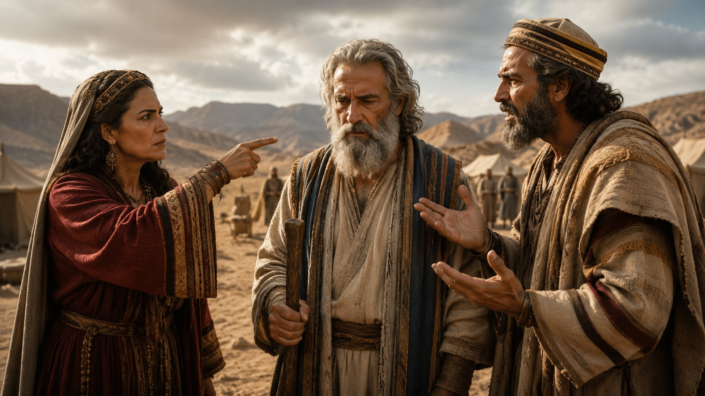

RELACIONAMENTO FAMILIAR
13 lições completas em HTML, com sumário clicável e capas padronizadas em 8K.
da li
"Honra a teu pai e a tua mãe, que é o primeiro mandamento com promessa," Ef 6.2.
Compreender que a obediência aos pais é a base para uma vida longa e abençoada.
Isaque nasceu com a promessa de se tornar o precursor de uma grande nação. Ele é um exemplo de filho obediente, que tinha uma relação próxima com o pai. O modelo de obediência de Isaque ultrapassa e contagia o entendimento de nossos dias. Quando era ainda um jovenzinho, ele não hesitou em se deitar sobre a lenha de um altar mesmo sentindo medo. Na verdade, nós não sabemos o que se passou naquele momento na mente de Isaque, mas nós cremos no que diz a Bíblia, que Isaque era um jovenzinho cheia de fé. Duas coisas se destacam na vida de Isaque: fé e obediência (Gn 22.6-12).
A história de Abraão é uma das mais belas histórias da Bíblia. Ele é considerado o pai da fé e amigo de Deus. Poderíamos dividir a vida de Abraão em três etapas: o chamado da fé (Gn 12), a renovação da fé (Gn 15) e a provação da fé (Gn 22). Quando ainda se chamava Abrão, Deus lhe fez uma poderosa promessa (Gn 12.1; 15.7). Aos setenta e cinco anos, Abrão partiu com sua esposa Sarai de sua terra natal e de seus parentes, em direção a um lugar que Deus iria lhe mostrar. Abrão tinha dois problemas: sua idade avançada e a esterilidade de Sarai. Mas Deus lhes prometeu que teriam um filho biológico e através dele evidenciaria Seu plano perfeito.
atividade em grupo Entregue uma folha de papel a cada aluno. Em siagio peça que hn à pergunta: por que devemos obedecer aos pais? Depois de Pç as respos Rd is a seguinte afirmação: "Filhos, honrem seus pais, obedecendo-lhes e respeitando o que dizem". Explique que "honra" é uma palavra grega, que significa reverenciar, estimar ou valorizar. Explique que os filhos devem honrar os pais, independentemente de eles merecerem ou não, pois isso é um dos Dez Mandamentos, o qual se repete também no Novo Testamento, (Ex 20.12; Ef6.1-3).
A OBEDIÊNCIA É UMA o sacrifício. Isaque « era um n rapazinho e PROVA DE FÉ compreendia muito bem oque o paiesta- | Ao visitar a casa de Abrão, o Senhor va fazendo. Ele até perguntou PA Abraão: 4 prometeu que Sarai seria mãe. Apesar de "Onde estã o cordeiro?", 6n 22:7.1 Mas ele i já serem idosos, o menino que Sarai daria confiava em seu pai, e o princípio da obe- AÊ ç & luz seria o herdeiro da casa de Abrão, diência é a confiança- "Aprendemos algo, a: a semente da qual descenderia a nação muito importante para a nossa vida espique Deus estava formando. Ao ouvir O ritual: sacrifi car pode até ser uma tarefa "que o Senhor havia dito a Abrão, Sarai riu, fácil para alguns, mas ser o sacrifício vivo porque sabia que aquilo era impossível. é muito difícil para todos. Mas o menino nasceu e foi chamado de Você não acha que Isaque sabia que ia Isaque, que significa "riso"; prova de que morrer quando Abraão o amarrou no feixe | para Deus nada é impossível (Lc 1.37). de lenha? Com certeza sim. Isaque, no enIsaque nasceu de maneira sobrenatural e tanto, escolheu obedecer ao pai, mesmo com um propósito, como cada um de nós. sabendo que a sua vida estava em risco Ele foi um filho obediente, que tinha mui- (Gn 22.1-18). Este é um clássico exemplo ta fé em Deus (Gn 18.1-19). da profundidade que pode existir na rela- O capítulo 22 de Gênesis destaca dois ção entre pai e filho. O mundo se opõe a aspectos importantes entre Abraão e Isa- essa convivência e, por isso, exerce uma que: a harmonia entre pai e filho e a obe- influência negativa que leva os filhos a se diência de ambos a Deus. Em obediência tornarem irresponsáveis, desobedientes a Deus, Abraão acatou a ordem divina de e cruéis com os pais. Isaque foi um filho sacrificar o próprio filho, que também, capaz de sacrificar a própria vida para não em obediência ao pai, concordou em ser desobedecer ao pai. Você faria o mesmo?
Isaque acompanhou o pai por três se unir diante de Deus e dos homens até dias sem questionar o que iriam fazer. que a morte os separe. Daí a importância Apesar de estar preso no lugar dosacri- de não se precipitar nessa escolha. Ouvir fício, ele não questionou as ordens do os pais é imprescindível porque eles são pai. Ressalte para os alunos que a con- experientes e capazes de detectar sinais fiança entre pai efilho, deve ser cultiva. de alerta invisíveis à paixão. da também nos dias atuais. Antes de tudo orar a Deus é a maneira mais sábia para escolher a pessoa certa
QUE família segundo o coração de Deus. Deus deseja que Seus filhos vivam em família, tendo o amor como fundamento. De acordo com a tradição daquela época, o líder da família tinha a responsabilidade de providenciar a noiva" N para os filhos. Abraão deveria encontrar Bo BENEFÍCIO DA OBE- É ; - Uma noiva para Isaque. No entanto, o pa- DIÊNCIA M É triarca, ; ciente do caráter moral dos povos Na sociedade atual, é comum que os que habitavam Canaã, decidiu optar por filhos confrontem os pais para atender às uma moça da sua própria parentela. Du- suas própria vontades. Eles até ignoram o rante a era patriarcal, era comum a união fato de que os pais os orientam porque de- entre pessoas da mesma família, para sejam que sejam bem-sucedidos em todas preservar o patrimônio do clã (Gn 24.2-4). as áreas de suas vidas. É por isso, que a BiIsaque teve uma vida adulta ma- blia nos orienta a honrar pai e mãe. ravilhosa. Ele casou-se com a bela e de- Os pais costumam confrontar os filhos dicada Rebeca, a noiva escolhida por emamor. Os filhos, no entanto, nem semseu pai, confirmada por Deus e a quem pre compreendem que a disciplina dos ele amava (Gn 24.62-67). Isaque tam- pais pode preservar suas vidas. O camibém deu continuidade aos negócios da nho que os filhos estão descobrindo não é familia e na história do povo de Israel surpresa para os pais, que já foram jovens (Gn 26.3-6). Da mesma forma o cristão um dia. O que é mais fácil: encontrar um deve ouvir os conselhos do Pai Eterno, caminho por conta própria ou ser instruibem como obedecer aos pais terrenos. do por quem já o percorreu? Do mesmo || O casamento é uma decisão importante, modo os pais estão sempre prontos a pois pode determinar o sucesso ou o fra- conduzir os filhos no caminho em que decasso familiar do individuo. Portanto, é vem andar (Pv 22.6). um desafio encontrar a pessoa certa para Quem honra os pais e os obedece re- Revista do Professor . : "9
cebe a promessa de uma vida longa (Êx 20.12). Honrar os pais é portanto, um CONCLU SÃO mandamento divino. É motivo de alegria Os pais sempre querem que seus filhos àos pais conviverem com filhos amoro- sigam um bom caminho. Eles esperam que sos, respeitosos e obedientes. tenham sucesso nos estudos, na carreira, na Ao agirem assim, os filhos demons- vida afetiva e, principalmente, na caminhada tram que vêm seus pais como autoridades com Deus. As vezes, eles podem até exage- instituídos por Deus sobre eles. rar nos cuidados, mas nunca com a intenção O cristão deve ser bom com a fami- de prejudicar os filhos. liae recompensar os pais, porque isso e agradável a Deus (1Tm 5.4). |
É fundamental que o professor e o aluno criem vínculos saudáveis, com respeito e confiança mútuos. Estude como Jesus agiu antes de enviar os discípulos para proclamarem o Evangelho. Jesus orava com eles, caminhava com eles, celebrava com eles, visitava os amigos com eles. Cada um desses momentos era uma oportunidade que o Mestre tinha para instruir os Seus discípulos. Muitos adolescentes são carentes de atenção, carinho e amizade e você pode ser um bom mentor cristão para eles. Conquiste-os e, depois, lidere-os, como fez Jesus com os discípulos.
O «vós, sinos, sede obedientes a vos- PESPOUSTOET
Honra a teu pai e a tua mãe, que é o PROMESSA)T primeiro mandamento com promessa, sos pais no Senhor, porque isso é justo. v para que te vá bem, e vivas muito tem- po sobre a terra", Ef 6.1-3. Acesse toda P terça-feira:
Data: ff nveja,> rivalidade e ressentimen! | Base Bíblica Gn 25.24-34; Pv 3.30
"E o Senhor lhe disse: Duas nações há no teu ventre, e dois povos se dividirão das tuas entranhas, e um povo será mais forte do que o outro povo, e o maior servirá ao menor", Gn 25.23.
Compreender que a inveja, o ressentimento e a rivalidade destroem a harmonia familiar.
Para uma mulher israelita, não ter filhos era algo triste e lamentável. As israelitas desejavam ter um filho homem, para dar continuidade ao nome do seu marido. Como Rebeca era estéril, Isaque orou insistentemente ao Senhor por sua mulher, até que as suas orações foram ouvidas (Gn 25.21). Rebeca engravidou de gêmeos. Dois meninos que começaram a lutar um contra o outro desde o ventre da mãe. Rebeca buscou ao Senhor por uma resposta para aquela disputa, e o Senhor lhe revelou que, em seu ventre, estavam sendo geradas duas nações, e que o filho mais novo (que nascesse por último) dominaria sobre o mais velho (Gn 25.23).
A oração de Isaque foi atendida, e Rebeca concebeu de maneira milagrosa. A esterilidade representa aquilo que não produz fruto. O texto bíblico nos ensina que a oração pode transformar as áreas mais inférteis da vida, pois Deus tem planos para cada um de nós. O Senhor responde às orações do justo (Tg 5.16). Os gêmeos Esaú e Jacó cresceram, assim como aumentou a rivalidade entre eles. Isaque tinha mais afeto por Esaú, enquanto Rebeca preferia Jacó. A predileção dos pais causou diversos problemas para aquela família. Nesta lição, aproveitando o exemplo da casa de Isaque, veremos que manter um bom relacionamento com Deus melhora nossas relações com as pessoas, e principalmente com a nossa família.
Peça aos alunos que façam uma esquete (pequena peça teatral) com o tema: "Relacionamento familiar: qual é o seu papel?", Diga aos alunos para serem sinceros, encenando como realmente são em casa. Solicite que discutam as questões mais comuns nas famílias, como: brigas, inveja, ressentimento. Conforme seu plano de aula, conceda-lhes um tempo para que possam criar o roteiro e ensaiar. Após as apresentações, discuta com a turma aspectos relevantes observados. ; Rebeca deu à luz a gêmeos. | É ro a nascer eraífuivo e pel O nascimento de Esaú e Jacó não foi ] apenas o cumprimento da oração de Isada este- que, mas o início literal de uma profecia. S is 0 impediu que Isa- Essa história, central no livro de Gênesis, asse a Deus e buscasse nEle a estabelece o cenário para a futura histó- - resposta à sua petição (Gn 25.21). Deus ria de Israel. Ela demonstra que os planos ouviu o seu clamor e abriu a madre de de Deus frequentemente se desenrolam Rebeca, e ela engravidou de gêmeos. a partir de intervenções divinas, superanDurante sua gestação, Rebeca percebeu do obstáculos humanos como a esteriliuma luta em seu ventre e, ao consultarao dade, para dar origem às nações conforSenhor, Deus lhe disse que duas nações me a Sua soberana Palavra. estavam se formando em seu ventre, e que o maior serviria o menor (Gn 25.23). B GÊMEOS, PORÉM DIFEA revelação determinava o destino de RENTES seus filhos, tanto como indivíduos quanto Os gêmeos nasceram, cumprindo-se a como fundadores de duas nações diferen- promessa divina. Cada um possuía parti- tes: os edomitas (descendentes de Esaú), cularidades pessoais que eram únicas e e os israelitas (descendentes de Jacó), distintas, que os diferenciava não apenas
no físico, mas também nã personalidade e casas de vida io : q A despeito das preferêriciad stíntas S irmãos, ambos deveriam fazer esÍ ido, Jacó precisou fugir olha gera consequências. E e d a casa de seu tio Labão em Harã, não foi prudente ao escolher tro- pois Esaú o ameaçou de morte. Isto reênção da primogenitura porum sultou em 20 anos de exílio para Jacó, e-comida. Esaú desprezou a pro- que teve que recomeçar sua vida longe essa espiritual, optando pelo prazer desua terra natal e de seus pais. passageiro da degustação de um guisado, Esaú nutriu raiva e desprezo pelos vanão mensurando as consequências que | lores patriarcais, casanda-se com mulhelhe sobreviriam. Por outro lado, Jacó foi res cananeias, o que gerou grande desastuto, fazendo-se valer da fome doirmão gosto para Isaque e Rebeca. a fim de conquistar o direito da bênção da Passado algum tempo, o Senhor transprimogenitura. Jacó também se fez pas- formou Jacó, que passou a se chamar |ssar por Esaú, diante de seu pai que estava rael. Mesmo já sendo um homem transcego e o abençoou como se fosse o seu formado, Jacó ainda temia a vingança filho primogênito (Gn 27.1-35). Osirmãos de Esaú, mas Deus concedeu paz para os fizeram suas escolhas, e tiveram que con- irmãos, décadas depois, em um reenconviver com as consequências. tro emocionante (Gn 33). Esaú correu ao Embora o ser humano tenha liberdade seu encontro, abraçou-o e chorou, depara fazer escolhas, consultar a Deus é monstrando perdão. uma forma de garantir que as consequên- O relato bíblico nos faz refletir que cias sejam bênçãos e não arrependimen- muitas famílias enfrentam dilemas, contos. "Tudo quanto semear, disto também flitos e questões morais. No entanto, é colhera", (Gl 6.7,8). importante destacar que um lar é cons- Leia Provérbios 14.12 com a turma e truido com base no amor, cumplicidade, ressalte sobre os perigos das consequên- afeto e respeito. Traços que identificacias das escolhas que visam o prazer da mos em Cristo. Revista do Professor À y Es
Todo lar precisa estar alicerçado em mos guardar o coração de sentimentos Deus, na oração, obedecendo os ensina- nocivos; ser sábio e prudente ao fazer mentos da Palavra, para que assim, seja escolhas, pois elas poderão impactar estabelecida a união e a harmonia. nossa vida no aspecto terreno e espiriOre com osalunos por cada laralirepre- tual; valorizar as bênçãos que O Senhor sentado e especificamente por problemas nos concede, principalmente a Salvação. familiares que eles estejam enfrentando Não trocar a eternidade pela enfermidade da vida. Transformar a mente através CONCLUSÃO da Palavra e firmar a vida na Rocha que é Através da história de Esaú e Jacó, im- Cristo para que as bênçãos nos alcancem portantes lições são apreendidas: deve- emtodo o tempo.
Mostrar preferência por um dos filhos pode levar 0 adolescente a um sentimento de vazio e causar discórdia e competição entre os irmãos. Isso também se aplica à maneira como o professor trata os alunos. Como ser humano, movido não apenas pelo intelecto, mas também pelas emoções, o professor está sujeito a identificar- -se mais com alguns alunos do que com outros. Mesmo assim, é importante tratar todos igualmente. O professor não pode, por exemplo, ser leniente com uns e duro com outros. Para evitar esse tipo de situação, seguem algumas dicas: . A) Não demonstre favoritismo; B) Nunca faça comparações; €) Elogie as motivações corretas; D) Converse com os alunos caso perceba inveja, competição OU desavenças entre eles; E) Respeite as individualidades. Adaptado de: educabras.com
[1) A) Nações/ entranhas/ menor B) Isaque/ caça/ amava C) Israel/ príncipe/ prevaleceste Você conhece os Recursos Pedagógicos Acesse toda que o Editoro Betel ofere tuitamente? ? terça-feira: [fr [2]
Absalão, um exemplo de rebeldia
"Porque a rebelião é como o pecado de feitiçaria", 1Sm 15.23.
Compreender que a rebeldia pode trazer consequências graves.
É normal que os adolescentes sintam o gosto da liberdade e queiram tomar decisões sem a supervisão dos pais. Isso porque a adolescência é uma fase de transições, com muitas mudanças e grandes descobertas. É importante, contudo, alertar o jovem para os perigos desses novos desejos e descobertas, especialmente, quando estão fora da vontade de Deus, eles podem levar a caminhos perigosos. A medida que o adolescente começa a formar suas próprias opiniões, é possível que questionem a autoridade de pessoas com quem convivem: pais, professores e autoridades. Existe, entretanto, uma diferença entre discordar e ser rebelde, como fez o jovem Absalão, cuja rebelião resultou em tragédias, divisões e inimizades. Absalão tinha tudo para se tornar um grande rei; porém, ele teve uma mortettriste e precoce.
A rebelião é um sentimento diabólico, a qual teve origem no pai de todas as rebeliões: Lúcifer (Is 14.12-15). O dicionário Michaelis define "rebelião" como rebeldia, oposição, resistência, teimosia. O pecado gera, no coração do ser humano, exatamente isto: rebeldia e resistência à obediência e às autoridades. Esse sentimento também afeta as familias, conduzindo filhos a desprezar os pais e, até mesmo, a tramar a sua morte para se apossar dos s manchetes nos assombram com casos semelhantes ao de Absalão, mostran- seus bens. A armadilha pecamino- | do que ninguém está imune à rebelião. À única maneira de evitar essa | sa é permanecer firme no Senhor. Viver+ Revista do Professor
Atividade em grupo a citam prémios Pergunte aos alunos o significado da palavra "rebeldia". Peça QU des mencionam de algumas vezes em que foram rebeldes em casa. Ê atoa a dam quioê situações em que se sentiram incompreendidos pelos ei ou que eles dá esc pais têm ideias ultrapassadas. Proponha, então, à seguinte reflexão: à E k é sinônimo de rebeldia? Por quê? Divida a turma em grupos, para que discutam assunto e anotem as conclusões. Para finalizar, cada grupo deve apresentar as suas conclusões para a turma.
; Absalão era filho de Davi com Maaca, uma mulher estrangeira, e, filha de Tal- sexualmente. mai, rei de Gesur (25m 3.2,3). A Bíblia Absalão, que acabou matando Am descreve Absalão como o homem mais fugindo da casa do pai (25m 13.34). bonito e cativante de todo o Israel; e não Absalão fez justiça com as próprias havia nele defeito algum (2Sm 14.25). O mãos. Mais tarde, ele voltou para tramar nome "Abshalom" deriva de duas pala- contra o governo de Davi. Tudo isso foi vras: "ab", que significa pai, e "shalom", gerado pela ausência de regras de convicuja tradução é "paz". O significado de vência, pois tanto o pai quanto o filho esseu nome, portanto, seria "o pai da paz", tavam distantes. Onde não há regras, O cujo destino profético seria protagonizar caos se instala. Mesmo sabendo que Abapaz. Porém, infelizmente, a rebeldiade- salão havia assassinado Amnom, Davi não formou a beleza física e interior de Absa- tomou nenhuma atitude, e o seu silêncio lão. Em vez de se tornar o pai da paz, ele apenas agravou a situação entre eles. se tornou o pai da guerra e da rebeldia! Absalão nutriu uma revolta interior. Davi tinha muitos filhos e muitas es- Ele via Davi como rei, mas não como posas, e com certeza, ele não conseguia pai. Davi não percebeu a malícia de dar atenção a todos eles, porque gover- Amnon nem tomou atitude contra a nava uma nação. Essa falta de cuidado maldade de Absalão. A falta de diálogo familiar fez com que muitos problemas gera sérios problemas. dos filhos não chegassem ao seu conhecimento. A própria rebelião de Absalão 2] O PLANO PERVERSO teve início quando Amnon, seu irmão Absalão se empenhou para evidenpor parte de pai, apaixonou-se por sua ciar ao povo a diferença que havia entre meia-irmã, Tamar. Amnon, dominado ele e seu pai, fazendo com que o povo por uma paixão doentia, fingiu estar acreditasse que Davi estava ultrapas-
sado e não tinha competência para governar O reino: ele alegou que o rein socorria os necessitados e não punia o os A corruptos (2Sm 15.3,4). quistou a simpatia do pov jovem, cheio de planos r o conhecimento neces | r um bom governante ( r 15.5,6). de Davi e Absalão são um exemplo trágico das consequências geradas quando o não enfrentam os sentimen- pe fosse Poupada. Contudo, no enfrentamento, Absalão, ao tentar fu- * gr ficou preso pelos cabelos nos galhos a sem ia o futu- de um carvalho. s "mas à sua rebeldia com- O comandante do rei Joabe, contraprometeu a sua promissora carreira. Ele riando a ordem do rei, lançou dardos que conspirou contra o rei, o próprio pai, à atingiram seu coração (2Sm 18.164,15). porta da cidade, e fingiu quererserojuiz Que triste fim ele teve! À rebeldia de do povo para fazer justiça (2Sm 15.3-6). Absalão, o levou ao pecado da rebelião Após se reconciliar com Davi, Ab- que levou o jovem principe a uma terrisalão colocou em prática o seu plano vel sentença: além de perder a própria maligno, induzindo pessoas ingênuas e vida, levou à morte de vinte mil homens simples a levantarem-se contra o rei. A (2Sm 18.7,8). rebelião gera consequências terriveis! Davi jamais pensou em um final tão (2Sm 15.16), pois se trata de uma ma- triste para o filho. Ele amava Absalão, nifestação maligna. Davi era um bom cujo nome revelava a esperança do pai servo de Deus, mas deixou de cumprir para o filho: "Pai da paz". É difícil acreo seu principal papel: o de pai. Absalão, ditar que um pai daria um nome tão por sua vez, não honrou Davi e pagou o significativo a um filho, esperando que preço por ser rebelde coma própriavida ele se tornasse seu inimigo pessoal. Ab- (2Sm 18.6-15). salão optou por fazer escolhas erradas, Leia 2Sm 18. 6-15, ressaltando a afastou seus passos dos ensinamentos trágica e prematura morte de Absalão, da Palavra de Deus (SI 119.105), desresfazendo um paralelo com Êx 20.12, peitou e foi insubmisso à autoridade de que garante longevidade a quem hon- seu pai (Êx 20.12), rebelando-se contra ra os pais, independentemente de ele. A rebeldia traz consigo grandes conconcordar ou não com eles. sequências, um alto preço a ser pago, e Revista do Professor uy
astar Absalão permitiu que o ódio dominas se seu coração e fez escolhas erradas a . optar pela rebelião. Tal atitude q lercu sua própria destruição. É preciso toma cuidado e estar atento com o que qr. ensinamentos para resolvê-los. mos em nosso coração (Pv 4,23). Fuja da s Frequentemente os jornais relatam —seduções mundanas que podem te ley m familia. Sele- à desobediência, engano, discórdia, a , arro- para gância e rebelião. o caminho dos revoltosos atrai O de Deus. Por isso, devemos nos af deles (Pv 24.21,22). Os conflitos familiares aparecerão na caminhada cristã, mas através da Palavra de Deus, encontramos sábios casos de rebelião e cione algumas dessas noticias exemplificar que a desobediência aos pais e a desarmonia entre OS irmãos podem culminar em tragédias.
A Biblia diz que Absalão era belo, perfeito e vaidoso (2Sm 14.25). Aproveite para conversar com os alunos sobre a ditadura da beleza. Os adolescentes costumam ser vaidosos e muito preocupados com a aparência física, o que pode resultar em dietas sem recomendação médica, cirurgias plásticas desnecessárias, O uso de maquiagem excessiva e de roupas caras, entre outros comportamentos. Estimule o cuidado pessoal, mas sem excessos, pois a melhor impressão que podem causar é a baseada no caráter, segundo os padrões de Deus, que são virtudes verdadeiras e eternas (Pv 31.30).
E "Não erreis: Deus não se deixa escarnecer; porque tudo o que o homem semear, isso também ceifará. Porque o que semeia na sua came, da carne ceifará a corrupção; mas o que semeia no Espírito, do Espírito ceifará a vida eterna", G16.7,8. ursos Pedagógicos Acesse toda oferece gratuitamente? 5 terça-feira:
"Vós, filhos, sede obedientes a vossos pais no Senhor, porque isto éjusto", Ef 6.1.
Conscientizar o aluno sobre a importância de manter a aliança com Deus e obedecer aos pais.
Israel enfrentava um tempo difícil, pois havia novamente, pecado contra Deus. À nação ainda não tinha um rei e o povo agia de acordo com o que achava certo aos seus olhos (Jz 21.25). Foi então, que o Senhor se revelou à família de Manoá, na qual nasceria um menino especial, consagrado para libertar o povo das mãos dos filisteus. Assim, o menina seria um separado, um nazireu de Deus, que deveria viver sob um padrão de santidade diferente dos demais jovens (Jz 13.3-5). Dessa forma, nasceu Sansão, que quer dizer "pequeno sol ou ensolarado", como a esperança que surgiria em meio ao caos da opressão filisteia para libertar Israel.
Sansão foi um dos juízes de Israel, a quem o Senhor concedeu imensa força física, como uma demonstração de Seu agir. A força de Sansão dependia, exclusivamente, da fidelidade ao voto de nazireu, que incluia não beber bebida forte, não cortar o cabelo, nem tocar em nada considerado imundo pela tradição judaica, para não se contaminar (Nm 6.1-22). Mesmo sendo um herói, Sansão também se comportava como um vilão. Era um sedutor incontrolável, sempre à procura de belas mulheres. Por um momento de prazer, ele colocava tudo a perder, inclusive a sua unção de nazireu. Ele nunca foi feliz no amor. E os seus olhos foram o motivo da sua derrota (Jz 14.1-3; 16.16-21).
DO Rnividade E E ha algumas perApós à introdução, divida a turma em pequenos die Sima O Bus À Biblia guntas para um debate, como: O que significa respeitar O pr NG que pode ser fala sobre respeitar os pais? Por que alguns filhos não ouvem "ed = ? oe rantot feito para melhorar o relacionamento entre pais e filhos? Os pais têm se DOG Como devemos proceder, quando os nossos pais não estão agindo corre j ER Peça aos alunos que reflitam sobre o assunto e anotem as hop conclu: . seguida, reúna-os em circulo para que possam debater suas opiniões. x
Se Sansão vivesse seria considerado um h traordinários. Sua fama att por Deus para ser a lhe trouxe gra- i ves consequências; ele ignorava os conDeus escolheu uma mulher simplesees- selhos dos pais e viveu a vida de maneira téril para mostrar que a Salvação vem de inconsequente, cuidando apenas de si e onde jamais imaginamos. Assim, o nasci- de seus deleites pessoais, ou seja, ele vi- mento de Sansão foi uma Obra miraculo- via para a sua própria glória. Sem temor sa de Deus (Jz 13.2,3), pois não há nada ao voto estabelecido por Deus, Sansão que o Senhor não possa fazer. alimentou o coração com o que os olhos O Senhor pode intervir na vida dos desejavam (1Jo 2.16). Isso fez com que Seus servos e colocar uma virgula onde o Espírito do Senhor se afastasse dele havia um ponto final (Jz 13.3). (Jz 16.20) e dessa forma, Sansão reco- : Embora cheia de boas expectativas, nheceu sua falta de sabedoria. Ele foi ; a vida de Sansão ilustra bem que com capturado por seus inimigos e se tornou À o pecado não se brinca. Sansão possuía escravo, mas, após se sentir arrependido | uma grande força física, ele matou trinta cumpriu o propósito divino ao derrotar os Ee homens certa vez (Jz 14.19); em outra, filisteus de uma só vez, momento em que mil filisteus com uma queixada de ju- também perdeu a vida. A
O-ma adversário de Sansão foi ele mesmo. Isso demonstra a necessidade de "nos revestir com armas espirituais e a viver em constante santificação (2Co 10.4; Ef 6.12-17).
«s Sansão viu uma linda jovem, que lhe "atraiu, e imediatarfifite comunicou aos +. pais que queria se casar com ela. Porém, " a moça era uma das filhas dos filisteus (Jz 14.1). Não Msosstu firmar se foi amor à primeira a sinto Mas, a verdade é que aquele casamento não correspondia à vontade de seus pais e não estava de acordo com a vontade de Deus. Os pais de Sansão não entendiam por que o filho era tão rebelde. Mas, naquela situação específica, Deus tinha um propósito contra os filisteus (Jz 14.4). Sansão sempre se deixou levar pela emoção e não pela razão. Ele era impulsivo e se deixava influenciar pelo que via. Por isso, disse ao seu pai: "Tomai-me esta, porque ela agrada aos meus olhos", Jz 14.3. A falta de respeito de Sansão pelos conselhos dos pais causou graves problemas. Casar sem seguir os planos de Deus e sem a aprovação dos pais é uma péssima escolha. Escolher um cônjuge é uma das decisões mais importantes na vida de um cristão. O principal critério é se a pessoa é verdadeiramente convertida. A Biblia adverte contra o jugo desigual (2Co 6.14); Revista do Professor pois o casamento também implica em união de propósitos espirituais. O casamento fora da vontade de Deus gerou muitos problemas para Sansão e consequentemente à sua família. Sansão se deixava levar pelo que via. Estabeleça com a turma uma comparação entres 6s textos |z 14.136 Ef 6.1-30.
Quando estava indo com os pais para a cidade de Timna, um leão veio na direção de Sansão, mas ele conseguiu matá-lo (Jz 14.5-6). Tempos depois, ao regressar à cidade para o casamento, Sansão foi olhar o cadáver do leão e viu que havia sobre ele um enxame de abelhas e mel, do qual se alimentou. Foi desse acontecimento que nasceu o enigma que ele propôs aos filisteus: "Do comedor saiu comida, e doçura saiu do forte", Jz 14.14. Depois do casamento fracassado, Sansão declarou guerra contra os filisteus. Ele usou trezentas raposas em chamas para queimar a colheita do povo inimigo (Jz 15.4-6) e feriu mil filisteus com uma queixada de jumento (Jz 15.15). Após esses episódios, Sansão se relacionou com uma prostituta local (Jz 16.1). Ao se levantar de madrugada, arrancou o portão da cidade, que pesava cerca de uma tonelada (Jz 16.2,3). Depois dessa grande demonstração de força, ele foi até o vale de Soreque, onde encontrou Dalila, por
quem se apaixonou (Jz 16.4). Por fim, com a Palavra geram bênçãos no pre Sansão foi traido por Dalila e levado pe- sente e grantem a vida eterna los filisteus, que o cegaram. Ele negligenciou as coisas de Deus e foi soberbo ao achar que o Senhor nunca CONCLUSÃO o abandonaria (Jz 16.18-20). Um triste Os filisteus cegaram Sansão (Jz 16.21), fim como consequência da rebeldia con- | os mesmos olhos que O levaram a pecar tra Deus e contra os pais. contra Deus e contra os seus pais. A vida As mês escolhas geram tristeza, der- de Sansão, nos ensina que as aparências rota e muitas conduzem à morte. enganam, e o pecado cega. Leia com a turma: Js 1.8 e Sl 1.1-3. A Biblia diz: "Há caminho que ao hoExplique que confiar em Deus, buscar a mem parece direito, mas o fim dele são Sua vontade e viver em conformidade os caminhos de morte", Pv 14.12.
Ensinar a Palavra de Deus em uma classe de adolescentes, além de ser um priviafio. Para conquistar os adolescentes, O professor deve ter légio é também um des respeitosas. "Educar não é um jogo em que se determina atitudes firmes, porém, quem vence ou perde", afirma a psicopedagoga Maria Helena Barthollo. Ela sugere que a luta com a juventude seja substituído por parcerias e colaborações que estadireitos e limites para todos, inclusive o professor. beleçam regras, Adaptado de: no Acesse toda terça-feira;
"E que, desde a tua meninice, sabes as sagradas letras, que podem fazer-te sábio para a salvação, pela fé que há em Cristo Jesus", 2Tm 3.15.
Compreender que a obediência resulta em boas escolhas.
Muitos jovens agem por impulso, sem usar o bom senso. Timóteo, porém, questionava cada passo: "Esta é a vontade do Senhor?". Ele tinha boa reputação entre os irmãos de Listra e de Icônio, dedicando todas as suas habilidades ao serviço de Deus, o que tomou a obra das suas mãos mais valiosa. Timóteo era um jovem promissor na pregação da Palavra, e Paulo investiu muito em seu talento. Timóteo é um bom exemplo de um jovem fiel aos ensinamentos da família, pois aprendeu sobre Deus com sua avó e sua mãe. Ele se tornou pastor, além de ter sido um grande cooperador de Paulo, um dos maiores lideres da Igreja Primitiva. Timóteo foi um jovem de testemunho irrepreensível, servindo como modelo até mesmo para os mais velhos.
Timóteo, ainda na juventude, já se destacava na igreja cristã em Listra (At 16.1,2). Havia tanto entusiasmo nele que os membros da congregação testemunhavam a seu respeito. Paulo sabia que o seu tempo na terra estava chegando ao fim; por isso, preparou o jovem Timóteo para sucedê-lo na Obra de Deus (LTm 1.2). Timóteo era filho de um casamento misto: a mãe era judia e o pai era grego. Paulo o circuncidou para que pudesse participar do ministério de evangelismo entre os dois povos (At 16.3). Assim, ele se tornou companheiro de Paulo, o seu homem de confiança, em quem o Apóstolo podia confiar e enviar para o campo missionário. Viver+ Revista do Professor
Escreva no quadro as perguntas abaixo e peça aos alunos que as respondam individualmente. Discutam sobre as respostas dadas para identificar possíveis dificuldades que os alunos possam ter em casa. 1) Qual o ensinamento de seus pais que você julga mais importante para a sua vida? 2) Você costuma ouvir os conselhos de seus pais ou de seus amigos? Por quê? 3) Quando há algum problema em sua vida, com quem você costuma compartilhar? 4) Os pais devem aprovar o namoro dos filhos com alguém que não professa a fé cristã? S) Você já pensou no tipo de relacionamento que cultivará com os seus filhos no futuro?
Timóteo foi um jovem privilegiado, uma vez Que cresceu em uma familia onde o entendimento de Deus era transmitido de geração em geração. Lóide ensinou a Eunice e ambas instruiram Timóteo. Desde a antiguidade, essa cultura tem sido transmitida entre os judeus. Deus ordenou que os pais ensinassem aos filhos em todo o tempo (Dt 6.1,2). A finalidade era garantir que a verdade do Deus Único passasse de uma geração para outra. Às vezes, deixamos de ser gratos pelo privilégio de ter nascido em um lar cristão, onde tivemos a oportunidade de aprender a Palavra de Deus, que nos oferece uma vida estruturada distante das práticas do mundo. Timóteo não somente aprendeu as verdades bíblicas, mas as colocou em prática. Por onde passava, as pessoas testemunhavam a seu respeito. E, mesmo sendo ainda jovem, a sua vida era a própria mensagem. As igrejas de Listra e Icônio viam Timóteo como um jovem exemplar, graças ao seu excelente testemunho e conhecimento da Palavra de Deus (At 16.1,2), fruto da obediência à sua avó e mãe. Timóteo honrava a sua familia e Deus o honrou, colocando- -o entre os grandes da Igreja Primitiva o (1Tm 1.18,19). O nome Timóteo signi- | fica: "Honrando a Deus" e aquêle jovem T escolheu viver de acordo com esse signi> ficado. Através do testem unho de Timéteo, muitas vidas foram transformadas e abençoadas (LTm 4.12-16). Infelizmente, muitos jovens, inclusive conhecedores do Evangelho, buscam aceitação, admiração e sucesso segundo os padrões deste mundo corrompido. Por medo de serem diferentes ou de não serem aceitos pelo grupo, muitos acabam negando a Cristo e se afastando dos ensinamentos que aprenderam em casa. Mas Timóteo foi um exemplo de alguém que honrou sua família e ao seu Deus, e até hoje é uma inspiração como cristão. Ele pregava com sua vida, mostrando que suas ações falavam mais alto que palavras. Isso, no entanto, não foi um privilégio apenas de Timóteo, você também pode escolher refletir a Deus com a sua vida. O desafio está lançado!
A bênção dos lideres espirituais também é tantes Quando Timóteo foi ado para o ministério, Paulo « os rmãos impuseram as mãos sobre ele, e isso o fortalecem Grevéstiu espiritualmente para sua missão mo 4.14). aii a" ep e q r 3 EB rimóreo, (o) JOVEM LÍO Apóstolo Paulo viu em Timóteo, um grande potencial, um jovem obediente e temente a Deus, para a missão de espalhar o Evangelho. Nas duas Cartas que enviou para ele, Paulo a instruiu sobre como pregar a Palavra, sobre como cuidar'das coisas de Deus e, principalmente, o instruiu a como manter-se firme na | fé (1Tm; 2Tm). Impressionado com a disposição daquele jovem para o ensino das Escrituras e seu amor pela verdade de Deus, Paulo convidou Timóteo para fazer parte da sua equipe missionária, juntamente com Silas. Paulo reconheceu as qualidades de Timóteo, apesar da sua aparência juvenil (At 16.1-5; 2Co 1.19). Para Timóteo, aquele convite deve ter sido como um sonho, pois desde menino, ele ouvia os ensinamentos da avó e da mãe acerca da soberania de Deus. Agora ele tinha sido separado, um escolhido do Pai para se juntar a dois grandes lideres cristãos, Paulo e Silas. Sob a orientação do Espírito Santo, eles partiram para fundar igrejas nas regiões mais distantes (At 16.3). Que privilégio! Timóteo, então, saiu de sua casa, para fazer a Obra missionária, honrando a Deus e à sua familia, que sempre investiu em sua educação cristã (2Tm 1.5). Timóteo passou de um jovem discípulo ta Revista do Professor em Listra para um líder fiel e dedicado, atuando como Pastor e administrador das igrejas sob a total confiança do Apóstolo Paulo. Assim como Deus comissionou Timóteo para a Sua Boa Obra, hoje também Ele procura por jovens que estejam dispostos a ouvir a Sua voz e assumir o Seu chamado. Com certeza, você está entre os eleitos, e Deus tem uma missão especialmente reservada para você! Faça uma breve oração com os alunos, pedindo a Deus que revele o Seu chamado para cada um deles. Elrimóreo, UM BOM
Timóteo foi um grande amigo e companheiro de viagem de Paulo e Silas, ajudando na propagação da Palavra de Deus em várias localidades. Ele recebeu missões especiais para fortalecer igrejas, como: Tessalônica e Corinto, o que mostra a confiança que Paulo tinha nele. Além disso, Timóteo é coautor de várias Cartas de Paulo no Novo Testamento e, mais tarde, assumiu a liderança da Igreja em Éfeso, onde enfrentou muitos desafios. A relação entre Paulo e Timóteo era muito próxima, com Paulo chamando- -o de "meu verdadeiro filho na fé". Ele esteve ao lado de Paulo durante momentos dificeis, incluindo suas prisões, e foi chamado para visitá-lo em Roma antes da morte de Paulo, mostrando o quanto a amizade e o apoio deles eram especiais. Muitos jovens sofrem por causa das escolhas que fazem. Eles fazem amiza-
a sua mãe tinham feito por ele. Timóteo de com pessoas que não acrescentam foi um jovem focado e sabia muito bem nada à sua vida. Dai a importância de você colocar as suas amizades diante onde queria chegar. de Deus, para pedir que Elete livre dos E você? Qual é o seu foco? falsos amigos e das pessoas que podem te desviar do bom Caminho. Isso não significa que você precisa viver isola- O jovem Timóteo desempenhou um do, mas que deve selecionar com quem papel importante nas mãos de Deus na se relacionar e refletir o quanto essas propagação do Evangelho. Sua postura, pessoas podem influenciar positiva e/ testemunho e temor a Deus chamaram ou negativamente a sua vida. Timóteo a atenção do Apóstolo Paulo que, mes- foi seletivo; ele priorizou o Reino e não mo ciente de que O jovem não tinha perdeu a oportunidade de se associar experiência no campo missionário, o | com os irmãos que poderiam ajudá-lo integrou à sua equipe. Assim como Tia crescer no conhecimento de Cristo. móteo, você também pode ser e fazer Timóteo também sabia que, assim, ele a diferença no Reino de Deus, mesmo estaria honrando tudo o que a suaavóe sendo ainda jovem.
Na adolescência inicia-se o processo de maturidade é a fase em que os filhos se tornam menos dependentes de seus pais. Isso gera um sentimento de euforia e liberdade. Em contrapartida, é normal que a pessoa se sinta confusa. Apesar de desejar pela vida adulta, o adolescente ainda não está preparado para ela. Daí a necessidade de bons referenciais a seguir. Infelizmente, nem sempre o adolescente encontra isso na própria família. Aproveite cada oportunidade que tiver para trabalhar essa questão. Destaque os bons exemplos bíblicos, como Timóteo, mas seja também você um referencial a ser seguido por seus alunos.
Qerca D,B,€ Você conhece os Recursos Pedagógicos Acesse toda
ec ei ução O Data: 4 | Versiculo-chave "Instrui o menino no caminho em que deve andar, e, até quando envelhecer, não se desviará dele", Pv 22.6.
Compreender que seguir os maus exemplos é uma escolha e não a única altemativa.
Amom, filho do rei Manassés, que foi um dos reis mais ímpios que reinou em Jerusalém, começou a reinar aos vinte e dois anos, e o seu governo durou apenas dois anos, devido a sua maldade contra o povo (2Rs 21.19). Amom "fez o que era mal aos olhos do Senhor, como fizera Manassés, seu pai", 2Rs 21.20. Embora Manassés tenha se arrependido e recebido perdão de Deus, isso não foi o suficiente para que Amom buscasse a face da Senhor. Aa contrário, ele adorou e serviu a ídolos. A nação estava em declínio e precisava de um líder: Porém, Amom, se entregou à maldade, morrendo ainda jovem.
Amom, assim como seu pai Manassés viveu uma vida marcada pela maldade e pela idolatria. Ele teve a oportunidade de aprender com os erros do pai e não reproduzi- -los, porém ele fez escolhas ruins . Quando ainda era jovem, herdou o reino e poderia ter se voltado para o Senhor e ter servido à nação com justiça. Entretanto, o jovem escolheu o caminho da injustiça, da perversidade e da idolatria, ado o mesmo caminho pecaminoso de seu pai.
evo
imaginem o que fariam se fossem reis ou rainhas, E Peça aos alunos que im g usando uma coroa, empunhando um cetro e E trono, i se sentiriam peço das responsabilidades que vêm com a liderança, Seja em ordens. Em seguida, escola ou na igreja, e como as ações de um lider afetam a vida casa, no o Inicie um debate sobre a influência negativa de Manassés dos que estão à do filho e do reino, questionando se Amom poderia ter agido de forma dife. na vida K Como dando «tados devolvendo-lhe o reino. Na alegria do perdão, Manassés rompeu com todaa idolatria, que havia implantado em Je E em Jerusalém, Si) dê incentiv o cul. salém. E to à imagem de escultura da falsa deúsa Embora o rei tenha se arrependi g cananita Aserá, trazendo assim para o coração do povo já estava contami meio dos israelitas, o politeismo, o culto com o culto aos falsos deuses, Amom, | à natureza e, o culto: sde assírios, por sua vez, decidiu não seguir o exemchegando a sacrificar um dos seus filhos - plo de arrependimento do pai, mas sima e (2Cr 33.6). Ele se envolveu com feitiçaria impiedade, cometendo os mesmos erros & com espiritismo da religião babilônica que Manassés cometeu contra o Senhor (2Rs 23.4,5,10-14), o que resultou em (2Cr 33.21-25). Amom presenciou a congrande injustiça no reino (2Rs 21.16). sequência do pecado na vida do próprio Manassés, em vez de evitar o desvio da nação, tornou-se q responsável pela restauração dos cultos pagãos, desfazendo todo o trabalho feito por seu pai, o bondoso rei Ezequias (2Cr33.2,3). Mesmo sendo advertido pelos profe- pai, mas isso não foi o suficiente para que O jovem rei escolhesse pela retidão e pelo temor a Deus. Pergunte aos alunos se o filho que se recusa a seguir o mau exemplo dos pais Os desonra. Faça um pequeno debate so- tas de Deus, ele ignorou as mensagens. bre esse assunto. Deus, por fim, enviou os assírios contra a nação de Israel, que desfilaram como rei, B AMOM ESCOLHEU A Preso a um carro de boi, pela cidade. Ma- MALDADE nassés, em meio ao sofrimento, fez uma oração de arrependimento, o Senhor ouviu a sua Oração, Mesmo não tendo um bom exemplo do pai, Amom teve a oportunidade de É Perdoou os seys pe. fazer suas próprias escolhas. Ser filho
E Emos fede
de alguém Ímpio não significa, m riamente, ser Impio também. O) também é verdadeiro, pois nem ser filho de alguém é Igual a seu pai. Of para ahistória, vemos o avô de Amom, rei Ezequias, que não seguiu os passos de f seu pal, o idólatra rei Acaz (2Cr 28 1 ele escolheu agradar a Deus (2€i Isso nos mostra que seguir cami rados não é só uma questão de ii cias, mas sim de escolhas próprias. ssões. As crianças eram Se Amom tivesse observado os em ada "casa, aprendendo pelo plos da sua família e as consequências exemplo dos pais. O pai levava o menino sofridas, ele saberia que o avô corrígiv os para o campo ou para à oficina, onde inierros que o bisavô havia cometido. Amom 'ciava o treinamento comtarefas fáceis e, teve a oportunidade de se tornar umgran- aos poucos, ensinava as mais dificeis; em de rei e mudar a história de Israel, mas casa, a mãe fazia o mesmo com as meele não o fez. A consequência disso veio ninas. Além disso, os pais se esforçavam logo: dominado pelo poder e pela malda- para ensinar valores, como respeito, hode, Amom teve uma vida curta, morrendo nestidade e responsabilidade. aos vinte e quatro anos, vítima das suas Entre os judeus, as pais deviam estar próprias decisões; foi traído e assassinado sempre envolvidos na educação dos filhos por seus oficiais (2Rs 21.19-23). (Dt 6.6-9). Os pais eram os primeiros pro- Uma lição que podemos extrair da fessores, e o lar era a primeira escola. O vida de Amom é: "Porque tudo o que o exemplo sempre começava dentro da próhomem semear, isso também ceifará" pria casa. A Biblia ensina que os pais têm (GI 6.7). A lei da semeadura! Amom tinha um papel crucial no futuro dos filhos: "Instudo para ser um grande rei, especial- trui o menino no caminho em que deve mente com o exemplo de seu avô, o rei andar, e, até quando envelhecer, não se Ezequias, que honrou a Deus ao se afas- desviará dele" (Pv 22.6). Educar não é restar dos maus caminhos do seu pai, o rei ponsabilidade da escola, mas dos pais. Os Acaz (2Cr 29.2-5). Na verdade, Manassés cristãos devem aprender isso desde cedo, já havia sido transformado pelo arre- para que, no futuro, coloquem em prática pendimento de seus atos pecaminosos. na família que constituirão. Amom, porém, não considerou os males Amom, por sua vez, não teve um pai que a nação já havia sofrido. Infelizmen- que o preparasse para O futuro. No ente, ele andou na contramão da verdade, tanto, isso não justifica suas ações, pois Revista do Professor
ele poderla ter seguido o exemplo de seu cria! avô (2Cr 29.2) Todos têm a capacidade e desta de fazer boas escolhas, independente- mente da sua história de vida. Apesar CONCLUSÃO de qualquer exemplo que recebemos em Nem sempre a família a qual pertence- casa, para os cristãos, Jesus é e sempre mos supre todas as nossas necessidades | será o melhor modelo a ser seguido. e expectativas, pois a nossa humanidade | A familia é a maior responsável pela é falha. O único capaz de nos suprir ple- formação moral, social e espiritual do in- namente é o Pai Celestial, que nos conhe- dividuo. ce em minúcia, desde o ventre da nossa Faça um pequeno debate sobre o pa- mãe(Sl 139). Que Jesus seja o seu melhor pel da escola e da familia na formação da modelo em todos os momentos da vida!
A adolescência é um período em que as influências do mundo podem causar conflitos na vida espiritual do indivíduo. Sempre que possível, aborde temas sobre: sexo, bebida, músicas, baladas, amizades, mostrando as suas consequências, como: morte precoce, gravidez indesejada, sofrimento dos pais. Exemplifique contando sobre episódios negativos envolvendo adolescentes. Ouça as opiniões com respeito, mas sem deixar de enfatizar a importância da obediência à vontade de Deus. Ore com a turma, lembrando que quem nos convence é O Espirito Santo, o nosso Ajudador!
O, 22anos [2] Diálogo, amor, respeito, família alicerçaB)2z anos da em Cristo, paz. €) Por seus oficiais Acesse toda Você conhece os Recursos Pedag terça-feira que 9 fartos Brtei ofereco 9
É Salomão, GrabioM que se torhou q insensáto b» " Base Bíblica 1Rs 21-10; 4.29-34 Versiculo-chave "Filho meu, ouve a instrução de teu pai e não deixes a doutrina de tua mãe. Porque diadema de graça serão para a tua cabeça e colares para o teu pescoço", Pv 1.8,9.
Compreender que uma vida plena e abençoada, se fundamenta na sabedoria, na obediência a Deus e aos pais.
Salomão, dotado de grande sabedoria concedida pelo Senhor, tornou-se um rei próspero e bem-sucedido. Nenhum outro rei ou personagem bíblico se igualou à sua posição única e privilegiada. Quando Salomão pediu a sabedoria dos céus, o Senhor afirmou que ninguém antes dele, nem depois, seria tão sábio quanto ele (1Rs 3.12,13; 4.24,25). Durante O reinado de Salomão, a nação israelita se expandiu, o comércio prosperou, os exércitos foram fortalecidos e modernizados, e o tesouro real estava abastecido. A ascensão de Salomão foi resultado das promessas divinas feitas muito antes de seu nascimento, quando o próprio Deus o separou para governar (1Cr 22.9,10). introdução Salomão pediu sabedoria a Deus para julgar e administrar o povo com justiça; por isso, Deus o capacitou como o homem mais sábio de todos os tempos (1Rs 3.9-12). A sua sabedoria era tão grande que sua reputação se espalhou por todo o mundo; "E vinham de todos os povos a ouvir a sabedoria de Salomão, e de todos os reis da terra que tinham ouvido da sua sabedoria", 1Rs 4.34, A rainha de Sabá, ao saber sobre ele, viajou uma longa distância, levando muitos presentes para Salomão, pois tinha a intenção de testar a sabedoria do rei de Israel. Ela ficou impressionada com a sabedoria dele (1Rs 10.1-7). Salomão também deu grande contribuição à literatura de Israel (1Rs 4.32). Viver+ Revista do Professor m
a 2"
Atividade em grupo ; unos se eles já tiveram alguma experiência ak e Deus n beta Relate, em breves palavras, à experiência de Salomão Ea oque des pediriam se estivessem no lugar do jovem as a RA ia, indagando O motivo de cada pedido. Ressalte sds gas a sábio, objetivo e altruista em suas petições. omão sabia que a oraçã vê oque éciso para lidarmos com várias situações que surgem ao longo da vida. Desde cedo, Salomão entendeu japidade de organização a importância de pedir a sabedoria divina arca era admirável. As cerimônias para que o seu governo fosse frutifero. " que ele promovia eram tão grandiosas e Faça uma breve oração com os alunos, belas que todo o povo de Israel se alegra- pedindo ao Senhor que lhes conceda sava com elas (1Re 8.65,66; 2Cr 7.8,10). bedoria em todas as áreas da vida. Isso porque a sua capacidade era resultado da sabedoria e do conhecimento que B A SABEDORIA DE SAo Senhor deu a ele. LOMÃO O pedido do jovem Salomão a Deus Com o sincero desejo de honrar o Sefoi simples: "A teu servo, pois, dá um co- nhor, Salomão ofereceu mil holocaustos ração entendido para julgar a teu povo, em Gibeon, lugar onde estava o antigo para que prudentemente discirna entre o Tabernáculo, como uma demonstração bem e o mal; porque quem poderia julgar de amor e total dedicação ao Pai,
*ta-e individualista, pensando apenas na sua satisfação pessoal. Salomão passou a acumular frustrações e derrotas, pois ele não soube administrar as rique- melhor do que ser servido, e dar é sem- zas que adquiriu, tornou-se arrogante, pre melhor do que receber (At 20.35). amante da ostentação, o que precedeu O reinado de Salomão foi bem-suce- sua queda (Pv 16.18). dido graças à sua fé e sabedoria. Mesmo O homem mais sábio do mundo tor- nou-se um louco, fazendo alianças com antes de seu nascimento, ele já havia outros reis, passou a resolver tudo de for- sido separado como rei (1Cr 22.9). Salomão honrou o chamado de Deus ma diplomática e envolveu-se com muipara a sua vida. Assim como Deus agiu tas mulheres estranhas que não faziam na vida dele, o Senhor também pode parte do povo de Deus. Salomão ainda se envolveu com a feitiçaria, sacrifican- do crianças a Moloque, o deus do fogo (1Rs 11.1-9). Então, Deus se indignou contra Salomão e anunciou à divisão do reino. Apesar da sabedoria que recebeu de Deus, Salomão deixou de ser vigilante e cedeu ao pecado. Além de decepcionar a Deus, ele falhou também com os seus pais que O educaram sabiamente no tehor. Davi, antes de morrer fazer o mesmo na sua. Sua chegada ao mundo foi planejada muito antes de você ter sido gerado (Sl 139.13-16). Todos nós temos um propósito particular em prol do Reino e, como servos do Altíssimo, devemos buscar em Deus reconhecê-lo e levá-lo adiante. Reconhecer o propósito de Deus para a nossa vida independe da idade; José, Davi e Daniel são bons exemplos disso, mor ao Sen Revista do Professor
seu povo de forma justa. Isso agradou ao Senhor, que além de lhe conceder sabe. doria, também lhe deu riqueza e honra, No entanto, com o passar do tempo, Salomão passou a agir em benefício próprio, estabelecendo alianças com nações pagãs e se casando com mulheres es- orientou seu filho como ele deveria se portar para ser bem-sucedido na vida e no reinado (1Rs 2.1-4). Perder o foco e ser levado f não foi exclusividade de Salomão. Quem elo pec ado deixa a direção de Deus e dos pais para aos apelos do mundo esta cerros. Leia Pv 16.18 trangeiras, que disseminaram a idolatria com a turma. em todo Israel. O declínio espiritual era portanto, inevitável! CONCLUSÃO A história de Salomão nos ensina que Salomão iniciou seu reinado pedindoa não basta iniciar bem, é preciso terminar Deus sabedoria necessária para governar melhor do que começou! (Ec 7.8). se entrega! sujeito aos mesmo
O sucesso, em todos os aspectos da vida, requer obediência aos ensinamentos do Mestre. Ressalte a importância de uma vida aos pés do Senhor, a quem os alunos devem sempre pedir sabedoria para enfrentar as situações da vida. Lembre-os de que o pecado nos acompanha durante toda a vida, e por isso, a importância de combinar sabedoria e obediência à Palavra. Fale de situações reais, como fatos da sua própria vida, em que a experiência e a maturidade demonstram que deixar a direção de Deus leva à ruína.
(1) A) Sabedoria B) Honra; C) Vaidade; D) Moloque; Acesse toda * terça-feira: informa: E e professores us conhecimentos referentes às de cada semana
PA Versículo-ch : -chave Bem-ave isericordi venturados os misericordiosos, porque eles alcançarão misericórdia", Mt 5.7. ci Objetivo da Lição nder que os propósitos de Deus se realizam na vida d ão fiéi independentemente das adversidades. jaegaçer sc José era amado e protegid js Emos aaa gido aee pai, Jacó, que tinha mais onze filhos homens e uma me- j ãe, Raquel, teve dois filhos com Jacó, José e Benjamim. Jacó a amava muito, pois trabalhou quatorze anos até que a recebesse como esposa. Além disso, O Dn dos meninos foi um verdadeiro milagre de Deus, pois Raquel era estéril. eai por isso Jacó tivesse tanta predileção por José, o qual era vítima da inveja dos irmãos. A rivalidade entre eles acabou causando muitas dores ao jovem José, que se manteve fiel em todas as situações dificeis que enfrentou. A fidelidade de José permitiu que os planos de Deus se cumprissem na vida dele e do povo de Israel.
devido ao tratamento privilegiado que recebia do pai e dos sonhos que indicavam que ele seria o maior entre eles. Indignados, os ifmãos o venderam como escravo, e O adolescente foi parar no Egito. Foi nesse lugar que Deus continuou a falar com ele em sonhos, além de permitir que José os interpretasse. Isso acabou sendo o motivo para que ele chegasse a uma posição de destaque no governo egípcio. Após alguns anos, José conseguiu entender que seu sofrimento longe de casa, da pátria e da família possibilitou que 9 povo de Israel não desaparecesse devido à fome (Gn 45.4,5). José foi vitima e da inveja dos irmãos, Viver+ Revista do Professor
Peça aos alunos que falem o que sabem sobre a vida de José. Você deve Corrigir alguma informação equivocada ou acrescentar fatos relevantes que eles não tenham citado, como por exemplo: o sonho que revelou a José que ele seria maior que os irmãos. Ressalte que José se manteve fiel a Deus durante o tempo de escravidão, e ainda foi capaz de perdoar a maldade dos irmãos contra ele. O que garantiu a preservação do povo de Deus no Egito. Faça um resumo antes da aula, incluindo as pas. sagens biblicas referentes ao tema da lição, para possíveis consultas durante a aula. Rigs mo PR ERES severo Eotoetem Jacó amava muito a José, & es E 7 h
(Gn 37.24). Isso porgu a er 'Deús, que lhe concedeu a capacidade de * vestimenta que de sonhar e de interpretar sonhos. Deus tinha destaque na família. O présente do paisina- planos para José, e a crueldade dos seus ir- | lizava que José era o herdeiro principal que mãos acabou levando-o ao lugar onde o Se- lideraria a família no futuro. nhor desejava que ele estivesse. José, certa vez, compartilhou um dos A inveja e o ressentimento impedem seus sonhos com eles: "Ouvi, peço-vos, este que a vontade de Deus se cumpra em nossonho, que tenho sonhado: Eis que estáva- sa vida. Por isso, é importante que o cristão mos atando molhos no meio do campo, e não alimente esses sentimentos no coração, eis que o meu molho se levantavaetambém mas viva em comunhão e amor com os irficava em pé; e eis que os vossos molhos o mãos (Tg 3.18). rodeavam e se inclinavam ao meu molho", Gn 37.6,7. Depois disso, José lhes contou 2.) UM EXEMPLO DE TEoutro sonho: "Eis que ainda sonhei um so- MOR À DEUS nho; e eis que o sol, e a lua, e onze estrelas Após ser emboscado pelos irmãos, José se inclinavam a mim", Gn 37.9. Os seus ir- foi vendido como escravo a um mercador
que o venderam no Egito a Potifar, capitão da guarda de Faraó. Ele ainda era adoles- que se manteve firme em todas! * cente quando isso aconteceu, e os ensina- ções, devido à sua intimidade € à 4160 41.4-57). chegaram, tudo estava preparado devido ao T *Na cadeia, Deus planejamento de José. O povo egípcio e ou- ] O jovem mais uma vez, fazendo tros povos vinham comprar mantimentos, com que o carcereiro-chefe o nomeasseres- porque havia fome em toda a parte. ponsável pelas chaves da prisão. O temor a Os irmãos de José também foram ao EgiDeus fazia com que todos notassem que ha- to em busca de alimentos, após uma série via algo diferente em José. Tudo prosperava, | de encontros, José revelou sua identidade a onde quer que ele estivesse (Gn 39.20-23). eles, que ficaram espantados ao vê-lo. José Ainda no cárcere, José interpretou os havia compreendido o propósito de Deus sonhos do padeiro e do copeiro do palácio em sua vida; ele perdoou os irmãos e manque também estavam presos. José fez uma dou trazer toda sua família para morar no interpretação correta: o padeiro foi morto, Egito, livrando-os da fome. No Egito, José e o copeiro foi solto. Após dois longos anos, | estava longe de qualquer apoio familiar José foi levado a presença do Faraó, queha- e enfrentando grandes dificuldades; ain- via tido um sonho que ninguém conseguia da assim, ele se manteve fiel ao seu Deus, e todos viam que o Senhor era com ele interpretar. Então, José não apenas revelou o significado do sonho como também lhe (Gn39.3-23; 41.38). Assim como José, que enfrentou grandes desafios, rejeições e injustiças, todos nós podemos passar por momentos dificeis em nossas vidas. José nunca deixou de buscar à Deus e permaneceu fiel, seguindo o mesmo exemplo de fé que aprendera com seu pai. apresentou estratégias, e como recompensa o Faraó o elevou ao cargo de governador do Egito. José se casou, governou e teve filhos no Egito, mas nem por isso, o Egito entrou no seu coração. Nem as adversidades nem 0 Revista da Professor
Ele entendeu que, mesmo na terra de sua CONCLUSÃO aflição (Gn 41.52), Deus estava ao seu lado Deus abençoou José e o preparou para e o fez crescer, tornando-o mais forte e pre- . lidar com o período de fome que assolaria parado para os propósitos divinos. a Terra. A grande habilidade administrativa Incentive os alunos a buscar a Deus. Se- de José permitiu que ele armazenasse manguindo o exemplo de José, que manteve sua timento suficiente para os sete anos de fé firme, buscou a Presença de Deus e con- escassez. O segredo de sua prosperidade, fiou no cuidado dEle. E lembre-se: o verda- contudo, era a Presença de Deus em sua deiro crescimento acontece quando apren- vida (Gn 39.3,23; 41.38). demos a depender do Senhor, mesmo nas José é um grande exemplo de fidelidasituações mais desatiadoras. de e confiança em Deus, mesmo diante de grandes desafios. Vale a pena ser fiel a Deus!
Muitas vezes, parece que estamos falando com as paredes, pois manter a atenção de jovens em uma sala de aula é dificil. Não desanime, eles são assim mesmo. Eles podem não estar olhando para você, mas conseguem prestar atenção e entender o que está sendo dito. Para evitar a monotonia, você pode modificar a arrumação da sala, mudar as cadeiras de lugar, formar circulos ou quadrados com elas. Essa pequena mudança já despertará o interesse e a atenção dos adolescentes. Adaptado de: familia.com.br
[2) A) Porque era filho de Raquel, sua esposa amada. B) Por meio de sonho. €) Que o Senhor era com ele. D) O padeiro e o copeiro. E) Manassés e Efraim. Você conhece os Recursos Pedagógicos O Arô Proressor! Sis iii asia toda terça-feira;
Samuel, o jovem sacerdote Versiculo-chave "Porém Samuel ministrava perante o Senhor, sendo ainda mancebo, vestido com um éfode de linho", 1Sm 2.18.
Saber que o cristão deve ser perseverante na oração e obediente a Deus e aos pais.
Nos dias de Samuel, a vida espiritual da nação de Israel estava em declínio. Havia trevas no sacerdócio, e o povo precisava de alguém que intermediasse a sua comunicação com Deus. Os filhos do sacerdote Eli eram ímpios, sem fidelidade ao sacerdócio. Eli estava quase cego, e o Senhor não se manifestava mais por meio de visões. No Templo, a manutenção da lâmpada de Deus, que simbolizava a Presença do Altíssimo, estava sendo negligenciada, refletindo o descuido de Eli e a corrupção sacerdotal de seus filhos. Consagrado ao Senhor desde o ventre materno, o menino Samuel cresceu no Templo. Ele substituiu Elie se tornou um dos mais importantes profetas da História de Israel.
Elcana era um homem honesto e humilde que tinha duas esposas: Penina e Ana. Ana era estéril, razão pela qual Penina a humilhava (1Sm 1.6). Além da impossibilidade de gerar, Ana se sentia triste com as provocações que sofria pela outra esposa de Elcana. Ana era uma mulher temente a Deus e sabia que Ele poderia mudar sua situação. Então, chegou a época de Ana acompanhar o marido até Siló, onde o povo celebrava uma das festas anuais mais importantes de Israel (1Sm 1.3). Em meio à alegria de muitos, Ana foi ao Tabernáculo e derramou o seu coração diante de Deus, que ouviu a sua oração sincera e permitiu que ela engravidasse de Samuel. Ana, porém, havia feito um voto ao Senhor: que o menino seria criado no Templo, para o serviço de Deus. Dessa forma, Samuel foi preparado para o sacerdócio desde a infância (1Sm 2.11,18). Viver+ Revista do Professor
Escreva no quadro: "Grandes missões exigem grandes sacrifícios". Promova um breve debate, questionando como isso se aplica ao voto de Ana com Deus. Aproveite para perguntar como ficaria a História de Israel, caso Samuel tivesse desobedecido a Deus e aos seus pais. gua UE mc Ed arma dA mio EBsamve., O SACERDO- Samuel foi introduzido no Templo an. | TE ESPERADO tes da lâmpada de Deus se apagar, ou y "Alguns estudiosos acreditam que Ana seja, no intervalo da madrugada e o ama. "esperou cerca de vinte e cinco anos pelo | nhecer (1Sm 3.3). Devido ao pecado, Is- seu milagre, uma vez que 0 Senhor havia rael vivia um tempo de trevas, sem reve- fechado a sua madre, e ela não conseguia lações de Deus e sem palavra profética. (o) engravidar (LSm 1.5). Apesar do sofrimen- povo rejeitava os ritos sagrados, por cau "tode Ana, Deus estava no controle daquela sa das atitudes dos filhos de Eli. « Situação, pois para tudo há um propósito. então, surgiu como a esperan Naquela época, o sacerdote era Eli que já novo sacerdócio. No Templo, | - estava idoso, quase perdendo a visão. Além deu a discernir a voz de De Us; disso, seus dois filhos, que poderiam subs- do-se um. profeta aprovado por todo o | * titulo, não tinham temor a Deus, pois se povo de Israel. Nenhuma das palavras de apropriavam das ofertas e se prostituiam Samuel foi em vão e surgiu entre o povo com mulheres no Templo: "Eram, porém, os uma nova voz profética (1Sm 3.19-21). filhos de Eli filhos de Belial; não conheciam Tudo devido à ousadia de uma mãe e a ao Senhor", 15m 2.12. obediência de um filho. Em meio ao sofrimento, Ana mostrou-se Além de suprir uma necessidade escapaz de consagrar o filho tão desejado ao piritual imediata do povo, a missão de serviço no Templo. O Senhor, então, conhe- Samuel incluía um propósito futuro: uncendo a sinceridade da Sua serva, permitiu gir Davi, que se tornaria o grande rei de que ela concebesse. E assim que Samuel Israel. foi desmamado, Ana cumpriu o seu voto e levou o menino para o Templo, onde ele foi 2.| SAMUEL ATENDE AO dedicado ao Senhor (1Sm 1.22-24). Ainda CHAMADO DE DEUS criança, Samuel já ministrava, usando uma O chamado de Samuel ocorreu aintúnica sacerdotal. Todos os anos, a sua mãe da em sua infância. Ao ouvir a voz de ia ao Templo levando uma túnica de linho Deus pela primeira vez, ele pensou que feita especialmente para ele (1Sm 2.18,19). fosse Eli quem o chamava, Eli percebeu
Caia os que Deus estava se manifestando e Íns- sua vida e do povo de Deus. Foram lon- truiu o menino como proceder: "Vai dei- | gos anos de perseverança, suportando as tar, e há de ser que, se te chamar, dirás: provocações de Penina. Os frutos colhiFala, Senhor, porque o teu servo ouve", + )s po "Aná foram evidentes. Ninguém — 1Sm 3.1:10. Embora "a não ndoaoçi am be o nome dos filhos de Peni-. rou deles nenhuma boa inspi3 uma vida cristã aprovada por Eb orientação com a obediém i característica paraele. O contraste entre Samuel e os filhos de Eli ficava cada vez mais evidente. En- vido d quanto Hofni e Finéias pecavam, caindo estímulo para muitas mi Ga Go do em descrédito, Samuel obedecia, sendo tempo. Esse é o resultado alcançado por admirado por 1 todos (1Sm 3.19,20). Sa- 1 deposita em Deus, através da ora- muel foi usado por Deus para | provocar Í ção, o seu futuro (Sl 16.5). um avivamento. espiritual: no meio do Ana entoou um cântico de gratidão ao povo, acabando com a idolatria, o que Senhor, declarando: "Até a estéril teve "trouxe de volta os dias de vitória para a sete filhos, e a que tinha muitos filhos ennação de Israel (1Sm 7.3-14). fraqueceu", 1Sm 2.5b. Isso significa que, Cabe ressaltar que Samueltambémera ao cumprir o seu vota com Deus, Ana foi dedicado ao ensino das Escrituras. Como | agraciada com mais filhos. Assim como conhecia o caráter dos filhos de Eli, ele disse Davi, Deus se agrada daquele que simplesmente os evitava, pois o bom ser- sacrifica o que lhe é valioso, pois ele não vo de Deus não se detém no caminho dos oferecia a Deus algo que não lhe custaspecadores (Sl 1.1). Samuel aindaeraado- se (1Cr 21.24). Atitudes assim, também lescente, mas discernia muito bem entre demonstram o nosso reconhecimento de o certo e o errado. À medida que o rapaz que tudo o que temos é pela Graça divicrescia, as notícias de um verdadeiro pro- na; portanto, tudo o que o cristão posfeta em Israel também cresciam comele sui deve ser usado para servir e honrar à (1Sm 7.15-17). Deus. Samuel não se diferenciava apenas por Samuel, desde menino, era responsável | estar no Templo, mas também porseguiros e comprometido com a sua missão. Ele ensinamentos de Deus e dos seus pais. Tan- cresceu dedicando seu tempo para aprender, colocar em prática e ensinar as coisas de Deus. O seu exemplo deve ser segui-. do ainda hoje, um tempo em que muitos O PODER DA O RAÇÃO adolescentes e jovens rejeitam os ensina- A oração de Ana mudou a história da mentos das Escrituras. Ana buscou o seu to o fracasso quanto o sucesso são resulta- dos das decisões que tomamos. Revista do Professor
A história de Ana traz muitas lições para OS crentes. Ana é um exemplo de fé e perseverança. As afrontas de Penj. na não a fizeram desistir, pelo contrário, s a aproximaram mais de Deus, i ouvida. Ela perve tudo fazia preparou milagre pela oração e fo severou, mesmo sem saber q parte do plano divino: Deus à er Samuel, o Seu escolhido. para conceb os alunos € Leia Tiago 5.16 com ve já alcançaram ela Persevere nas orações por sua família Mantenha-se firme na presença do Se. nhor, e Ele responderá às suas petições, pergunte sobre O q como resposta de oração à Deus. Incentive-os a perseverar quando a resposta não for imediata, assim como Ana fez.
s aulas, algumas estratégias são importantes: Para aumentar O sucesso da ve os adolescentes possuem sobre os assuntos A) Valorize o conhecimento q abordados. B) Proponha atividades que gere C) Crie momentos em que os próprio Faça da sala de aula um ambiente fav cas pedagógicas dinâmicas, como O USO d Adaptado de: porvir.org/ m interação e colaboração entre os alunos. s alunos ensinem algo aos colegas. orável à escuta e à criação, adotando prátie recursos visuais e vídeos.
O .portanto, diz o Senhor, Deus de Israel: 2 ——s
Na verdade, tinha dito eu que a tua casa e FXHRTBMEFL N a casa de teu pai andariam diante de mim E z
perpetuamente; porém agora diz o Se- MPERPETUA T E)JR nhor: Longe de mim tal coisa, porque aos MHTXA aa ds Eta
que me honram honrarei, porém os que me VUTTBEEEZUZVANHM
desprezam serão envilecidos", 1Sm 2.30. Acesse toda terça-feira:
o 10 ámieA Data: EA
me e determinei em meu coração saber, e inquirir, e buscar a sabedoria e "Eu tornei a voltara razão, e conhecer a loucura da impiedade e a doidice dos desvarios", Ec 7.25.
Compreender que a negligência com O serviço de Deus traz sérias consequências.
Eliera um ancião manso e bondoso, que morava no Templo com osfilhos, Hofnie Finéias. Entretanto, mesmo vivendo no Templo, onde se refletia a Santidade de Deus, os filhos do sacerdote usurpavam as ofertas e profanavam aquele lugar de adoração. Dessa forma eles vulgarizavam os cultos e os sacrifícios. Para Hofni e Finéias, o santo e o profano se igualavam (1Sm 2.12-17). Eli poderia ter aplicado medidas mais severas para impedir a impiedade de seus filhos, em vez de tentar convencê-los apenas com palavras. Por esse motivo, no momento em que O castigo de Deus veio sobre a sua casa, Eli foi considerado cúmplice de seus filhos. A negligência com as coisas de Deus levou os dois jovens à morte precoce, o que antecipou também a morte de Eli. Além disso, a Arca de Deus foi tomada pelos filisteus (LSm 2.22-25).
Apesar de ser um homem bondoso, Eli não tinha forças para enfrentar os pecados de seus filhos. Hofni e Finéias eram dois jovens sacerdotes, mas nunca tiveram um encontro real com Deus. Não tinham nenhum temor diante da Presença do Senhor, nem nunca experimentaram a Sua Glória. Os dois irmãos nunca tiveram o coração quebrantado, nem experimentaram a unção do Pai em suas vidas, pois não tinham reverência à Santidade de Deus. Eles eram tão corruptos que o Senhor os chamou de "filhos de Belial", ou seja, filhos de Satanás (1Sm 2.12). Deus, então, disse a Samuel que julgaria a casa de Eli, que conhecia à iniquidade dos filhos e ele nada fez a respeito (1Sm 3.13). Viver+ Revista do Professor E
Distribua dicionários aos alunos para que procurem O significado e "insensato", Peça que leiam as seguintes passagens: pv 15.20; 17.10 e Ec7. 25. Depois, oriente-os a fazer uma autoavaliação, tentando lembrar-se de situações em que agiram com insensatez e sofreram as consequências dos seus atos. Enfatize que errar é humano, mas o servo de Deus deve procurar corrigir Os seus caminhos e fugir da insensatez e da desobediência. ERA omissão DE ELI servem de referênc um il Eli foi um sacerdote dedicado, mas que pagou um alto preço pela desobe: um pai omisso diante da conduta errada diênciae a negligência como serviço-de dos seus filhos e a consequência disso foi Deus. Se Eli tivesse buscado a direção de |, desastrosa, como sempre acontece com Deus para lidar com os filhos, o Senhorte- 4 quem deixa de zelar pelas coisas de Deus. | ria lhe mostrado a melhor maneira de cor. | ' Hofni e Finéias eram imorais, sem res- - rigi-los. Por outro lado, se dquelesfovens É: A peito pelo sacerdócio que herdariam do tivessem respeitado o pai e obedeei om
"cerimonial do sacrifício e se apropriavam suas histórias teriam sido diferentes. - da melhor parte da oferta antes mesmo O pecado de Eli e dos seus filhos troue ter sido apresentada, ouseja, elesnão xe maldição para a sua descendência. jam temor a Deus (1Sm 2.12-17). O Os irmãos morreram no mesmo dia fascinava, e Eli nada fazia para (1Sm 2.34).Ao receber a notícia da derropunir osfilhos e colocá-los de volta no ca- ta de Israel para os filisteus, da morte de > minho santo, mesmo com o povo adver- seus filhos e de saber que a Arca de Deus tindo sobre a conduta profana de ambos. havia sido levada pelos inimigos, Eli caiu (1Sm 2.22,23). Como consequência, Deus da cadeira, quebrou o pescoço e morreu rejeitou Eli e seus filhos. (1Sm 4.18). Além disso, nunca mais os Eli fracassou porque amou mais os pró- seus descendentes chegaram à idade prios filhos do que a Deus (15m 2.29), não avançada, como disse o Senhor por meio os afastando do sacerdócio, como se não do profeta: "e toda a multidão da tua casa soubesse o que eles faziam (1Tm 3.4,5). morrerá quando chegar à idade varonil", E Hofni e Finéias foram reprovados por 1Sm 2,33. não honrar a Deus e ao Templo, além de Segundo a Lei Mosaica, a gordura e O | desobedecerem ao pai. A família de Eli, sangue do animal sacrificado deviam ser | acabou se tornando um exemplo negati- dados primeiro a Deus, depois eram ser: vo para o povo de Israel. Ainda hoje, eles vidos os sacerdotes, o ofertante e seus fa- E Viver+
"a 4] ida Mas a ] mo niliares. Os filhos de Eli, porém, comiam IS a carne antes mesmo de oferecê- la ems sacrifício ao Senhor, ' respeitavam o povo à deveriam servir, pois todos se escandalizavam com os "seus péssimos ga 2.23). Bo PECADO-DE HO o filhos de Eli estavam ta pia e FINÉIAS s. deem, a Lei, ta Como filhos do sacerdote Eli, Hol Y a e Finéias tinham uma missão específica: | É ds se esqueça de ad és dar continuidade ao sacerdócio do pai. Deus todos os dias, cr " conheEntretanto, ao longo do tempo, o com» cimento e graça, mia intimiportamento e a conduta dos jovens es- dade comoPail — a candalizaram a todos. Os dois se aproveitavam da posição que ocupavam e nem mesmo o próprio pai tinha controle sobre eles. Além de impor a sua autoridade sacerdotal, os irmãos não mostravam interesse em obedecer a ninguém (1Sm 2.23-25). A Biblia nos ensina que aquele que muitas vezes é repreendido e endurece o coração, mostrando teimosia e desobediência será quebrantado sem que haja cura para ele (Pv 29.1). Assim, o descuido com a vida cristã acarreta sérios problemas (Jr 48.10). Embora Eli tenha falhado em repreender os filhos, não podemos dizer que ele não tenha lhes ensinado os oficios do Templo. Com certeza, assim como ensinou a Samuel, Eli também ensinou a Hofni e Finéias. Isso nos leva a crer que eles fizeram uma escolha pessoal ao mostrar desinteresse em conhecer ao Senhor (1Sm 2.12b). A vida cristã se renova a cada dia pelo relacionamento intimo com Deus e no convívio com o próximo. Além de não possuírem um bom relacionamento com Peça aos pe que compartilhem coméeles têm buscado intimidade com Deus. Incentive-os a orar diariamente com esse propósito.
Deus enviou um profeta para exortar Eli sobre seus próprios erros: "Porque dais coices contra o sacrifícia e contra a minha oferta de manjares, que ordenei na minha morada, e honras a teus filhos mais do que a mim, para vos engordardes do principal de todas as ofertas do meu povo de Israel?", 1Sm 2.29. Deus ficou tão irado que desfez o juramento feito à casa de Eli, transformando-o em juizo perpétuo e anunciando a morte de Hofni e Finéias no mesmo dia (1Sm 2.31-35). Eli negligenciou a educação e a correção dos filhos e o resultado foi desastroso. Ele errou pela omissão, quando deixou de repreender a má conduta de Hofni e Finéias. Estes, por sua imoralidade, também provocaram o juizo divino sobre si mesmos e sobre Eli. O erro de um somou-se ao erro do outro e todos foram Deus, que preferiu deixar que morressem punidos. Revista do Professor
Em meio a todas as transgressões, CONCLUSÃO Deus levantou Samuel para uma dificil in- Eli deixou de disciplinar seus filhos. Pocumbência: chamar a atenção de Eli para rém, Deus como Pai Celestial, não deixa os vergonhosos pecados dos seus filhos; de disciplinar os Seus filhos, a quem ama: condenar o sacerdote por ser negligente e "Filho meu, não desprezes a correção do anunciar um castigo que nenhum sacrifício Senhor e não desmaies quando, por ele, poderia evitar. Portanto, Eli e a sua casa, fores repreendido; porque o Senhor corforam rejeitados. Certamente foiumamis- rige o que ama e açoita a qualquer que são triste e dificil para o menino Samuel, recebe por filho. Se suportais a correção, uma vez que Eli foi o seu instrutor acerca Deus vos trata como filhos; porque, que das coisas de Deus, cuidando dele desde filho há a quem o pai não corrija? Mas, se quando chegou ao Templo (1Sm3.10-21). | estais sem disciplina, da qual todos são Peça aos alunos que reflitam emsilên- feitos participantes, sois então bastarcio sobre como têm tratado seus paise as dos, e não filhos", Hb 12.5-8. coisas de Deus e como eles podem con- sertar possiveis erros.
Nesta lição, os alunos tiveram a oportunidade de aprender sobre as conseguências da indisciplina, um comportamento que também pode acontecer em sala de aula. Para resolver a questão, você não deve ignorá-lo, nem insistir em seguir com a aula a qualquer custo. Faça uma pausa, converse com a turma sobre a situação e tente responder e envolver todos na solução do problema. Assim você pode fortalecer o vínculo afetivo com os alunos sem perder a sua autoridade em sala.
[2 A) filhos — Belial - conheciam; B) pecado - porquanto - desprezavam; C) juizes - rogará - matar. Você conhece os Recursos Pedagógicos Acesse toda ú ALô Proressor! que q Editora Betel oferece gratuitameme? á »» terça-feira: dido MO [HO]
Data: onatas.e Davi, amigos fiéis" tm % à
"Em todo o tempo ama o amigo, e na angústia nasce o irmão", Pv 17.17.
Compreender que as boas amizades trazem benefícios pessoais e é agradável a Deus.
Jônatas e Davi poderiam ter sido adversários, pois ambos tinham direito ao trono de Israel: Jônatas, por ser filho do rei Saul; Davi, por ter sido ungido por Samuel! para o trono. Entretanto, assim que Jônatas viu Davi derrotar Golias, o gigante herói dos filisteus, a sua alma se ligou à de Davi (1Sm 18.1,2). Dessa forma uma forte amizade nasceu entre eles. Diante da bravura de Davi, Jônatas colocou aos pés do jovem pastor de ovelhas a capa real, a espada e os outros acessórios que o identificavam como herdeiro do trono (1Sm 18.4). Foi como se Jônatas dissesse: "Eu sou o filho do rei, mas você é o escolhido de Deus".
Jônatas era um jovem brilhante e muito leal. Ele defendeu Davi em várias ocasiões confrontando até mesmo os erros de seu pai, o rei Saul: "Então Jônatas falou bem de Davi a Saul, seu pai, e lhe disse: Não peque o rei contra seu servo Davi, porque ele não pecou contra ti, porque os seus feitos te são mui bons", 1Sm 19.4. Jônatas também era um jovem humilde. Ao reconhecer a escolha de Deus, ele não só abriu O caminho para o escolhido, como também se ofereceu para ser o segundo ao seu lado (1Sm 23.17). Eles eram tão amigos que fizeram um pacto de proteger a família um do outro caso morressem (2Sm 9.1). Viver+ Revista do Professor Eá
Escreva o nome dos alunos em tiras de papel, dobre e coloque-as em uma caixa ou cesto. Cada aluno deve retirar uma das tiras. Distribua papel, caneta e lápis de cor para que façam um cartão, datado e assinado, para o seu "amigo secreto". Vale um versículo bíblico, uma frase de agradecimento, uma ilustração ou uma dedicatória, desde que incluam alguma caracteristica do aluno sorteado, mas sem mencionar o nome dele (ou dela). Reserve alguns minutos para à atividade. Em seguida, peça a cada aluno que leia o cartão ou mostre a sua ilustração para a turma, que deve descobrir de quem se trata. A pessoa que escreveu O cartão pode fornecer algumas dicas, enquanto você conduz a atividade. Conforme forem acertando, o cartão deve ser entregue com um aperto de mão ou abraço. aqueles dois homens aud lentes conseguiram manter de tão fiel, sem que isso se tornasse U * obstáculo para que cada um cumprisse a) | sua própria missão. A resposta ésir o Deus os separou como amigos verdadei- q "ros, pois sabia que boas amizades, quan- "do confirmadas por Deus, são um forte " aliado em nossas lutas. Como vivemos um tempo de total declínio moral, as verdadeiras amizades estão sendo prejudicadas. A amizade sincera entre dois homens OU entre duas mulheres tem sido rotulados pejorativamente e visto com malícia, O que não deixa de ser um ataque direto à Pala- os de jorte que ele corria ; -2,3). No coração de Jônatas, não havia espaço para inveja ou ciúme, pois a amizade que ele e Davi nutriam era também bastante madura, como toda amizade deve ser. Uma prova disso foi que Jônatas, foi capaz de renunciar ao trono de Israel e aceitar se submeter a Davi, pois sabia que o amigo seria O futuro rei da nação conforme a vontade de Deus. Isso nos mostra o quanto Jônatas era um homem temente a Deus acima de qualquer cargo ou posição real; ele foi capaz de admitir e aceitar a escolha vra de Deus, que nos afirma: "Em todoo de Deus, não se opondo ao fato de Davi tempo ama o amigo; e na angústia nasce assumir o trono (1Sm 23. 16-18). o irmão", Pv 17.17. Para o cristão, ami- Deus providencia amigos zelosos e zade vai além da convivência; elaé for- fiéis para cada um dos Seus servos. É pre- ela fé em Jesus. Além disso, se ciso, contudo, saber ser um bom amigo talecida p
rambémi fiel, sincero, ( disposta à apoiar biente rural, teria conseguido lidar com as dificuldades que enfrentou para assumir 0 reinó sem ter um verdadeiro amigo?. Em sua imensa soberania, Deus afei o coração de Jónatas a Davi, pois ass ' ele poderia apoiar o futuro reí * nas corres ta 23.16). tas & chorando as suas VaRP aca
Saul conhecia Davi apenas pe providenciou Jônatas, capaz de apoiar e livrar Davi das mãos de Saul (1Sm 19.4). Assim como Jesus teve um anjo para confortá-lo no Getsêmani (Lc 22.41-44), Deus levantou Jônatas para apoiar e ajudar Davi em sua missão. Jônatas sabia que estar com Davi era um risco, pois O rei Saul o considerava um criminoso; porém, ele sempre dava um jeito de ajudar seu amigo, a quem muita amava: "Levantou-se Davi da banda do sul, e lançou-se sobre o seu rosto em terra, € inclinou-se três vezes; e beijaram-se um ao outro € continua sendo lembrada, servindo de choraram juntos, até que Davi chorou modelo para amizades sinceras. Eles, muito mais", ISm 20.41. com certeza, não foram os únicos amigos Mesmo depois da morte de Jônatas um do outro, mas o fato é que eles fo- (2Sm 1.4), Davi honrou o pacto feito com ram amigos até a morte (15m 18.1,2,4; o amigo: "E disse Davi: Há ainda alguém 2Sm 1.11,12,26). que ficasse da casa de Saul, para que lhe Pergunte aos alunos se eles acreditam faça bem por amor de Jônatas? (...). Enem amizades verdadeiras nos dias de tão, disse Ziba ao rei: Ainda há um filho hoje. Incentive-os a buscar em Deus ami- de Jônatas aleijado de ambos os pés (...). zades sinceras e reciprocas. E, vindo Mefibosete, filho de Jônatas, filho de Saul, a Davi, se prostrou com O DEUS ENVIA OS AMI- rostoporterraese inclinou. E disse Davi: GOS CERTOS Mefibosete! E ele disse: Eis aqui teu servo. E disse-lhe Davi: Não temas, porque outro, oram juntos para agradecer as vitórias e para se fortalecerem nas lutas. A Biblia mostra que muitas civilizações surgiram e desapareceram; exércitos poderosos marcharam sobre a terra e pereceram, nunca mais foram lembrados. No entanto, a amizade de Jônatas e Davi mesmo depois de milhares de anos, Como Davi, que cresceu em um am» Revista do Professor ns
decerto usarei contigo de beneficência CONCLUSÃO por amor de Jônatas, teu pai, e te resti- A amizade de Davi e Jônatas se baseava tuirei todas as terras de Saul, teu pai, etu nalealdadee no afeto e não em interesses de contínuo comerás pão à minha mesa", pessoais. Davi e Jônatas mantinham uma 2Sm 9.1,3,6,7. Deus faz coisas maravi- amizade pautada nos pilares da confiança lhosas, e um dos mais belos presentes mútua, no amor fraternal, na sinceridade, que Ele nos oferece é a verdadeira ami- na aliança diante do Senhor, e assim, juntos, como irmãos, superavam as dificulda- des. Uma amizade vai além do apoio mútuo, ela se fundamenta, principalmente zade! Explique aos alunos que a palavra "ôs culo" significa "beijo". Tanto no AT quan to no NT se refere à maneira de os ho- no compromisso com Deus. mens se cumprimentarem com um beijo Uma amizade verdadeira como essa, na face. serve de grande exemplo para todos nós.
A amizade desinteressada de Jônatas se opõe com a inveja diabólica de Saul. Jônatas, apesar de ser o herdeiro legitimo do trono, jamais teve ciúmes ou inveja de Davi. Caso você tenha percebido esses sentimentos nocivos em algum aluno, aproveite a lição para explicar que a inveja é um sentimento anticristão e prejudicial à fé. Leve os alunos a reconhecer a necessidade de se aproximar de Deus e buscar sempre o perdão. Não julgue nem recrimine, apenas oriente-os adequadamente.
[3) A) Jônatas conhecia Davi profundamente. B) Jônatas protegia e encorajava Davi nas adversidades. C) Entre eles não havia inveja ou ciúme. Você coni Pedagógicos Acesse toda O Aô Proressor! que a Editor teto) gratuitamente? Es terça-feira: am ar lições de cada semanã
Data: / Roboão, um rei tolo Base Bíblica 1Rs 12.1-33
"Filho meu, se os pecadores, com blandícias, te quiserem tentar, não consintas", Pv 1.10.
Compreender que os sábios seguem bons conselhos, pois eles promovem a vida.
Salomão edificou templos pagãos em Jerusalém para as suas esposas estrangeiras e os comerciantes de outros países. Além disso, o rei também passou a render culto aos deuses de outros povos, semeando grande confusão religiosa em Israel. A idolatria e a fraqueza espiritual de Salomão provocaram à divisão do reino, uma vez que a união do pais dependia de Deus. O rei não se manteve fiel ao Senhor, resultando em grande fracasso para elee para o povo. Por isso, quando o seu filho Roboão assumiu a trono, havia muitas expectativas de mudanças no reino. O povo esperava que Roboão fosse justo e aliviasse as suas cargas, mas ele foi pior do que o pai (2Cr 12.1-13).
ele herdou um reino cheio de problemas, com Quando Roboão começou a reinar, extravagâncias de Salo- pessoas que foram injustamente sobrecarregadas pelas mão, seu pai. Por esse motivo, havia muita esperança que Roboão colocaria o reino em ordem. Entretanto, após assegurar o reino e tê-lo fortalecido, Roboão decidiu abandonar a Lei de Deus, e Israel seguiu o seu mau exemplo (2Cr 12.1). Ele fez muitas exigências ao povo, tomou decisões erradas e tratou mal os seus trabalhadores, pois desprezava o conselho dos anciãos (2€r 10.6-8). Quando o próprio povo pediu para ser ouvido, Roboão também se recusou. Isso gerou uma revolta e o reino se dividiu (2Cr 10.15). r 51 Ver+ Revista do Professor
n bom, eu não dava, vendia". Peça aos alunos ed oro quanta A ie Provérbios 11.14. Proponha um debate sori a E oq a sabedoria" popular e a sabedoria biblica. Qual das duas e O cristão deve aceitar tudo o que cada mesmo que seja considerado "sabedoria"? Como evitar essas armadilhas? Aproveite para orientá-los a se aconselharem com os pais ou com algum lider maduro da igreja, quando for preciso. eferiu o conselho de jo- ientes, que nunca tinham gojernado um reino, mas afirmavam ser seus ; ão saber, amigos: "Porém ele deixou o conselho que T, DUV Onselho de quem pode- os anciãos lhe deram; e teve conselho com tá-lo bem. Um exemplo disso acon- os mancebos que haviam crescido com ele teceu quando os israelitas, cansados e sobre- e estavam perante ele", 2Cr 10.8. Roboão carregados, pediram a Roboão que aliviassea prometeu tornar a vida do povo ainda mais pesada carga tributária que eram obrigados a difícil, como os seus "amigos" o aconselha- pagar. Não tendo habilidade para tomar deci- ram (1Rs 12.6-11). Ele não considerou que sões como essa, o que é normal em umasitua- um bom conselho poderia salvar o reino, ção que não dominamos, o rei pediu ao povo mas um conselho ruim levaria o reino à ruína para voltar em três dias, quando ele lhes daria (Pv 11.14; 12.15). uma resposta (1Rs 12.5). Alerte os alunos sobre o risco de se dei- | Roboão foi até os anciãos, os mesmos xar influenciar por aqueles que não servem que Salomão buscava conselhos no passa- enem temem a Deus. do, em busca de orientações. E os anciãos Fale sobre as conseguências de uma decilhe ensinaram o caminho da vitória, di- são errada, como no caso de Roboão Alg : U-
Viver+ |
? Deus des- , rei do Egito, entrou no pfo e levou os tesouros da casa do rei, bem como os escudos de ouro que Salomão havia feito (2Cr 12.9-11). Os escudos representavam a honra em uma batalha, e permitiu que a influência idólatra sua mãe, que era amonita, predominasse sua perda era considerada desonrosa para na nação de Israel (1Rs 14.21-24). Roboão, qualquer exército, além de representar portanto, "fez o que era mau, porquanto não o Poder, a riqueza e a Glória de Deus em preparou o seu coração para buscar o Senhor", meio ao Seu povo. Quando o rei entrava 2Cr 12.14. A partir desse momento, suas for- no palácio, os soldados levantavam os estalezas de nada lhe serviram, pois Deus o en- cudos de ouro, e ele se lembrava da Pretregou nas mãos de Sisaque, rei do Egito, que sença de Deus. Roboão foi leviano também confiscou todo o tesouro do Templo e trans- nisso, pois mandou confeccionar escudos formou Roboão em seu vassalo (2Cr 12.1-12). de bronze para substituir os de ouro, algo Roboão sofreu as consequências por seguir desagradável a Deus (2Cr 12.10-11). conselhos dos ímpios, de pessoas que não têm Roboão era insensato e insensível! Para nenhum vinculo com o Senhor. ele, não importava a qualidade dos escudos, Roboão é um triste exemplo de um filho bastava trocá-los, pois tudo era substituível que não se importou com o legado de seu - para ele, até mesmo Deus. Isso demonstra pai. Se ele tivesse observado a vida de Salo- que Roboão negligenciava as coisas de mão, teria aprendido que, enquanto andas- Deus, que representavam à Sua Presença se com Deus, tudo iria bem, mas se afastar Santa no meio de Israel. Ele trocou a excedo Senhor lhe traria consequências ruins. — lência pela lamentável mediocridade. Não foi assim com o seu pai, Salomão? Hoje, muitos do povo de Deus também A infidelidade de Roboão resultou na per têm abandonado os princípios importantes a Pr A! da da proteção divina que ele tinha. Deus da vida cristã por hábitos e modismos. É Revista do Professor
importante observar se as músicas que ou- CONCLUSÃO vimos, as roupas que usamos ou mesmo Os Os escudos de cobre podem ser compa. lugares que frequentamos são agradáveis a rados ao trono de Roboão, já que este não Deus. O cristão não deve ser como Roboão, o conduziu a um caminho de excelência, aceitando cobre em lugar do ouro. Isso sig- Ele era insensato e mau, características que nifica que os maus conselhos corrompem os eram reforçadas pelos maus conselhos que bons costumes de Deus na vida do crente recebia. O Evangelho é vida e não aparên. (1Co 15.33). Fique atento! cia. Através da Palavra de Deus, busque a Fale à turma sobre a atual inversão de mente de Cristo. Você é como um espelho valores. Compare a substituição do ouro | projetado para refletir a Glória daquele que pelo cobre, da joia pela bijuteria e da sa- o resgatou dastrevas para a Sua gloriosa luz bedoria biblica pelo conselho do impio (1Pe 2.9).
O verdadeiro educador nunca deixa de aprender. Estude as lições da EBD com antecedência, aproveitando para avaliar o seu nível de conhecimento sobre cada tópico. Existe sempre algo novo a aprender e, reconhecer isso, garantirá mais eficiência no processo ensino-aprendizagem. Não caia na armadilha de pensar que já sabe o suficiente, o que é incoerente com o ministério de ensino. O verdadeiro cristão cultiva um espirito ensinável, aprendendo hoje um pouco mais do que ontem, na busca constante pela excelência, que reflete o carater de Deus.
AN ] Você conhece os Recursos Pedagógicos Acesse toda

Versiculo-chave "Não sejamos cobiçosos de vanglórias, irritando-nos uns aos outros, invejando-nos uns aos outros", Gl 5.26.
Compreender que a revolta, a insubordinação, o ciúme e a inveja causam prejuízos e impedem o crescimento espiritual.
Ninguém está imune aos ataques maldosos, que podem partir até da própria família. Miriã e Arão, irmãos mais velhos de Moisés, se mostraram descontentes com a liderança de Moisés, durante a jornada pelo deserto. O Senhor ouviu as suas queixas, alegando que Moisés ostentava uma posição de reconhecimento e eles não. O problema surgiu quando Moisés casou-se com uma mulher cuxita (de pele negra), apesar de a verdadeira razão de toda a disputa ter sido a inveja que Miriã e Arão guardavam no coração (Nm 12.1,2).
Miriã era uma boa irmã. Ainda criança, ela acompanhou o cesto em que Moisés foi colocado no Rio Nilo. Quando a filha de Faraó o tirou da água, Miriã sugeriu que ela chamasse uma hebreia para amamentar o menino. Isso permitiu que Moisés fosse criado, até certa idade, por sua mãe biológica (Êx 2.4-9). Arão, foi quem esteve ao lado de Moisés nas visitas a Faraó durante a libertação do povo do cativeiro egípcio (Êx 4.14-16). Mais tarde, já na passagem pelo deserto Miriã e Arão se revoltaram quando Moisés casou-se com uma mulher etiope. Na verdade, ao ler o texto, percebemos que eles estavam com inveja: "Porventura falou o Senhor somente por Moisés? Não falou também por nós?", Nm 12.1,2. Os dois irmãos, antes preciosos para Moisés, permitiram que a inveja e a competição invadissem seus corações. Viver+ Revista do Professor
a ps A o. <
Escreva em tiras de papel os nomes de sete personagens estudados no trimestre. Dobre-os e coloque-os dentro de uma caixa. Chame sete voluntários que devem retirar um dos papéis, ler os nomes neles escritos e guardá-los em segredo. Cada um representará o seu "personagem oculto" para a turma, sem revelar de quem se trata. O aluy no pode descrever caracteristicas físicas ou comportamentais do personagem, como: "O meu paiera sumo sacerdote e juiz; eu fui criado no Templo, mas desprezei a Obra de Deus". No final da apresentação, 0 aluno pergunta: "Quem sou eu?" Você pode complementar a atividade citando os pontos positivos ou negativos de cada personagem, também é possivel agregar informações relevantes sobre cada um. Esta dinâmica per- mitirá que você avalie o que os alunos aprenderam ao longo do trimestre. Da, tanta da falsida Ve um profeta, porque com ele o Senhor falava face a face, OU seja, havia entre Deus e Moisés intimidade. Deus deixou claro para Miriã e Arão que perturbação e toda obra perversa", as visões e os sonhos são enigmas a seTg 3.16. Apesar do alerta divino, a inveja rem interpretados, enquanto falar face a tem dominado o coração de muitos cren- face diz respeito somente a quem é intites, inclusive o coração de Miriã e Arão, mo (Nm 12.6-8). que foram surpreendidos ao falar de Moi- Moisés nada disse, pois era um homem sés. Eles não perceberam que o próprio muito manso (Nm 12.3). Então, Deus julDeus estava ouvindo as suas lamenta- gou a causa de Seu servo, trazendo ao ções (Nm 12.2). seu conhecimento a inveja e o falatório Para esclarecer a situação, o Senhor dos seus irmãos, que foram punidos pelo convocou os três irmãos para uma re- Senhor (Nm 12.9). união familiar. Ele pediu que os três fos- Esclareça que o casamento com uma sem para a porta da Tenda, onde desceu mulher etíope, não era imoral nem ilegal. em uma nuvem e revelou para Moisés, Alguns estudiosos defendem que Cuxe
possa ser uma abreviatura de Cusã, Nes. te importantes para que o Reino de Deus e caso, seria uma referência à Zipora, a avance. Aceite à função que o Senhor lhe filha de Jetro (Êx 2.16-21). concedeu, exercendo-a com zelo e res- 2.| ponsabilidade! | O CARÁTER DE MIRIÃ E — arevolta de Miriã e Arão revelaram a ARÃO inveja que eles nutriam no coração conEnquanto Miriã e Arão permitiram que tra Moisés. Leia Salmos 139.24 com os a inveja os dominasse, Moisés continua. alunos, incentivar rm, li- va sendo o mais manso de todos os ho» bertação de to: mens que havia sobre a terra (Nm 12.3). possam estar "A Biblia revela que Miriã se rebelou con- : "tra Moisés. Arão, contudo, em vez de re- 3] MOISÉ r, compactuou com a atitude inve- DEUS e Miriã. Ele poderia tê-la exortado, Na reunião com Deus e seus irmãos, jo O fez. Ainda que Arão não tenha Moisés ficou calado. Ele não fez nenhudiretamente contra Moisés, otex- ma crítica aos irmãos, nem reclamou, o-biblico mostra que, diante de Deus, nem se lamentou ao saber do ocorrido. todos são chamados à responsabilidade Moisés apenas intercedeu pela cura de por suas palavras e ações, mesmo aque- Miriã, pois, quando a nuvem de Deus se les em posição de liderança. foi, Arão observou que a sua irmã estaMiriã e Arão não perceberam o quanto va leprosa, com a pele esbranquiçada eram importantes e úteis na vida de Moi- (Nm 12.10). Dirigindo-se a Moisés, Arão sés. Da mesma forma existem pessoas lhe disse: "Ah! Senhor meu! Ora, não que se destacam mais como recepcionis- ponhas sobre nós este pecado, que fitas na entrada da igreja do que pregando zemos loucamente e com que havemos ou ensinando no púlpito. E o contrário pecado!", Nm 12.11. Arão referiu-se a também é verdadeiro. Deus confiaa cada Moisés como "Meu senhor". E, naquele um de seus servos uma missão igualmen- momento, esqueceu-se de que era profete preciosa (Ef 4.11,12). ta e sacerdote e assumiu o seu papel de Assim como cada membro do corpo servo. Ele havia sido exortado por Deus e humano, também cada cristão temo seu visto a lepra em Miriã, o que fez com que próprio papel no Corpo de Cristo, sendo reconhecesse a autoridade divina sobre a único na Obra de Deus (1Co 12.7). Moi- vida de Moisés. sés não escolheu ser o lider do povo, mas Mesmo sendo o sacerdote do povo, Deus o chamou para essa função (Éx 3.4). que deveria interceder diante de Deus Alguns, portanto, são lideres e outros por Miriã, Arão assumiu o seu pecado são liderados, mas todos são igualmen- e apelou para a intercessão de Moisés Revista da Professor
(Nm 12.11). Moisés, que permaneceu em silêncio durante todo o tempo fez apenas uma breve oração: "Ô Deus, rogo-te que a cures", Nm 12.13. Logo em seguida, Deus explicou a Moisés dizendo que O Seu ato foi como se um pai cuspisse no rosto de uma filha, tornando-a imunda à murmuração, o que desagrada a Deus, (Nm 12.14). A lepra foi como um lembre- Não guarde em seu coração nenhum sen. te, ensinando aos rebeldes, Miriãe Arão, timento que possa fazer você pecar, pois ' a respeitar as autoridades constituidas o pecado paralisa a vida de quem peca por Deus (1Sm 26.11). e de quem está ao seu redor. Enquanto tos homens, Miriã não recebeu tratamento, o povo
A inveja e o sentimento faccioso levam E É ç Livre de não pôde seguir em direção à Terra Pro- PS AA nbições materiais, qua metida.
Diante do que aconteceu, o Senhor tomou uma atitude imediata, convocando os irmãos para uma conversa séria (Nm 12.4). Haviam dois motivos: 1) Os três eram líderes, dai o risco de um conflito; 2) Eles eram irmãos e a casa dividida contra si mesma não subsiste (Mt 12.25). Assim, Deus ensina o Seu povo a como solucionar problemas: reunindo as partes envolvidas, para que tudo seja esclarecido. Incentive os alunos a serem sinceros em situações que discordem. E, se for preciso, devem usar a mesma estratégia que Deus usou com os irmãos de Moisés, caso se vejam em situações semelhantes.
a [| Você conhece os Recursos ALô Proressor! que a Editora Betel oferece gratuitamente? Acesse toda terça-feira: ções desen possam ampliar seu lições de cada sei bit ly/preaula-viver